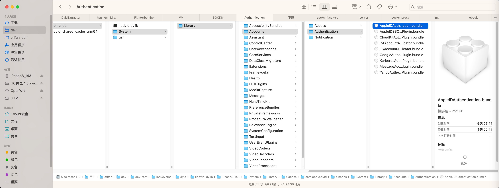
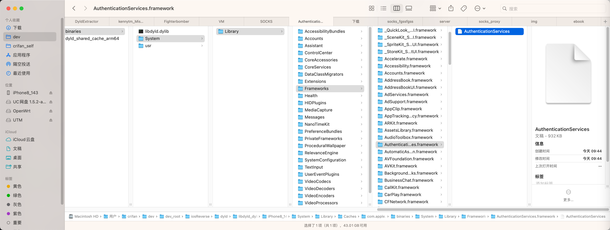
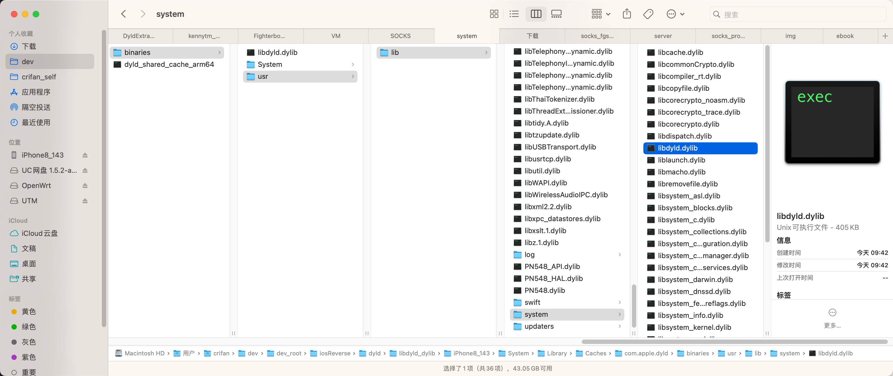
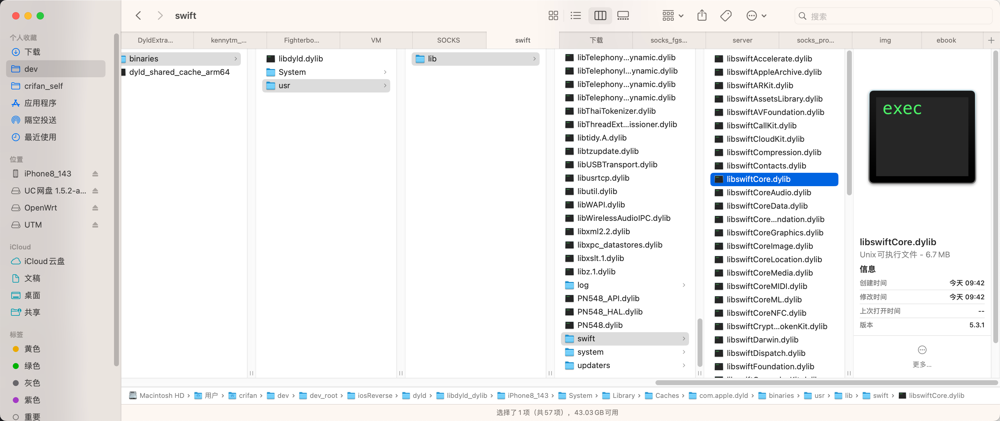

导出结果
导出的全部的文件的效果：




输出文件的目录tree
➜ binaries tree .
.
├── System
│ └── Library
│ ├── AccessibilityBundles
│ │ ├── AXActionSheetUIServer.axuiservice
│ │ │ └── AXActionSheetUIServer
│ │ ├── AXSpeechImplementation.bundle
│ │ │ └── AXSpeechImplementation
│ │ ├── AccessibilitySettingsLoader.bundle
│ │ │ └── AccessibilitySettingsLoader
│ │ ├── AccountsUI.axbundle
│ │ │ └── AccountsUI
│ │ ├── AddressBookUIFramework.axbundle
│ │ │ └── AddressBookUIFramework
│ │ ├── AssetExplorer.axbundle
│ │ │ └── AssetExplorer
│ │ ├── CameraEditKitFramework.axbundle
│ │ │ └── CameraEditKitFramework
│ │ ├── CameraKit.axbundle
│ │ │ └── CameraKit
│ │ ├── CameraUI.axbundle
│ │ │ └── CameraUI
│ │ ├── DDActionsService.axbundle
│ │ │ └── DDActionsService
│ │ ├── HearingAidUIServer.axuiservice
│ │ │ └── HearingAidUIServer
│ │ ├── LinkPresentation.axbundle
│ │ │ └── LinkPresentation
│ │ ├── MediaPlayerFramework.axbundle
│ │ │ └── MediaPlayerFramework
│ │ ├── MediaPlayerUIFramework.axbundle
│ │ │ └── MediaPlayerUIFramework
│ │ ├── Memories.axbundle
│ │ │ └── Memories
│ │ ├── MessageUIFramework.axbundle
│ │ │ └── MessageUIFramework
│ │ ├── PassKitFramework.axbundle
│ │ │ └── PassKitFramework
│ │ ├── PhotoLibraryFramework.axbundle
│ │ │ └── PhotoLibraryFramework
│ │ ├── PhotoLibraryServices.axbundle
│ │ │ └── PhotoLibraryServices
│ │ ├── PhotosEditUI.axbundle
│ │ │ └── PhotosEditUI
│ │ ├── PhotosFramework.axbundle
│ │ │ └── PhotosFramework
│ │ ├── PhotosUICore.axbundle
│ │ │ └── PhotosUICore
│ │ ├── PhotosUIFramework.axbundle
│ │ │ └── PhotosUIFramework
│ │ ├── QuickLook.axbundle
│ │ │ └── QuickLook
│ │ ├── QuickSpeak.bundle
│ │ │ └── QuickSpeak
│ │ ├── RemoteUIFramework.axbundle
│ │ │ └── RemoteUIFramework
│ │ ├── SocialFramework.axbundle
│ │ │ └── SocialFramework
│ │ ├── StoreKitFramework.axbundle
│ │ │ └── StoreKitFramework
│ │ ├── StoreKitUI.axbundle
│ │ │ └── StoreKitUI
│ │ ├── UIKit.axbundle
│ │ │ └── UIKit
│ │ ├── WebCore.axbundle
│ │ │ └── WebCore
│ │ ├── WebKit.axbundle
│ │ │ └── WebKit
│ │ ├── WebKitLegacy.axbundle
│ │ │ └── WebKitLegacy
│ │ ├── WebProcess.axbundle
│ │ │ └── WebProcess
│ │ ├── WebProcessLoader.axbundle
│ │ │ └── WebProcessLoader
│ │ └── iTunesStoreFramework.axbundle
│ │ └── iTunesStoreFramework
│ ├── Accounts
│ │ ├── Access
│ │ │ ├── CloudKitAccessPlugin.bundle
│ │ │ │ └── CloudKitAccessPlugin
│ │ │ ├── DefaultAccessPlugin.bundle
│ │ │ │ └── DefaultAccessPlugin
│ │ │ └── YelpAccessPlugin.bundle
│ │ │ └── YelpAccessPlugin
│ │ ├── Authentication
│ │ │ ├── AppleIDAuthentication.bundle
│ │ │ │ └── AppleIDAuthentication
│ │ │ ├── AppleIDSSOAuthenticationPlugin.bundle
│ │ │ │ └── AppleIDSSOAuthenticationPlugin
│ │ │ ├── CloudKitAuthenticationPlugin.bundle
│ │ │ │ └── CloudKitAuthenticationPlugin
│ │ │ ├── DAAccountAuthenticator.bundle
│ │ │ │ └── DAAccountAuthenticator
│ │ │ ├── ESAccountAuthenticator.bundle
│ │ │ │ └── ESAccountAuthenticator
│ │ │ ├── GoogleAuthenticationPlugin.bundle
│ │ │ │ └── GoogleAuthenticationPlugin
│ │ │ ├── KerberosAuthenticationPlugin.bundle
│ │ │ │ └── KerberosAuthenticationPlugin
│ │ │ ├── MessageAccountAuthenticationPlugin.bundle
│ │ │ │ └── MessageAccountAuthenticationPlugin
│ │ │ └── YahooAuthenticationPlugin.bundle
│ │ │ └── YahooAuthenticationPlugin
│ │ └── Notification
│ │ ├── AAAccountNotificationPlugin.bundle
│ │ │ └── AAAccountNotificationPlugin
│ │ ├── AADataclassEnableNotificationPlugin.bundle
│ │ │ └── AADataclassEnableNotificationPlugin
│ │ ├── AAIDMSAccountNotificationPlugin.bundle
│ │ │ └── AAIDMSAccountNotificationPlugin
│ │ ├── ACDatabaseBackupNotificationPlugin.bundle
│ │ │ └── ACDatabaseBackupNotificationPlugin
│ │ ├── ADAccountsNotificationPlugin.bundle
│ │ │ └── ADAccountsNotificationPlugin
│ │ ├── AKAccountNotificationPlugin.bundle
│ │ │ └── AKAccountNotificationPlugin
│ │ ├── AMSAccountNotificationPlugin.bundle
│ │ │ └── AMSAccountNotificationPlugin
│ │ ├── AMSAccountSyncNotificationPlugin.bundle
│ │ │ └── AMSAccountSyncNotificationPlugin
│ │ ├── ASDAccountNotficationPlugin.bundle
│ │ │ └── ASDAccountNotficationPlugin
│ │ ├── AppleIDSSONotificationPlugin.bundle
│ │ │ └── AppleIDSSONotificationPlugin
│ │ ├── BTCloudPairingAccountNotificationPlugin.bundle
│ │ │ └── BTCloudPairingAccountNotificationPlugin
│ │ ├── CDPAccountNotificationPlugin_IOS.bundle
│ │ │ └── CDPAccountNotificationPlugin_IOS
│ │ ├── ClassKitAccountNotificationPlugin.bundle
│ │ │ └── ClassKitAccountNotificationPlugin
│ │ ├── CloudBookmarksAccountsNotifier.bundle
│ │ │ └── CloudBookmarksAccountsNotifier
│ │ ├── CloudKitNotificationPlugin.bundle
│ │ │ └── CloudKitNotificationPlugin
│ │ ├── CoreIDVAccountNotificationPlugin.bundle
│ │ │ └── CoreIDVAccountNotificationPlugin
│ │ ├── CoreLocationAccountNotificationPlugin.bundle
│ │ │ └── CoreLocationAccountNotificationPlugin
│ │ ├── CoreRecentsAccountNotificationPlugin.bundle
│ │ │ └── CoreRecentsAccountNotificationPlugin
│ │ ├── CoreRoutineAccountNotificationPlugin.bundle
│ │ │ └── CoreRoutineAccountNotificationPlugin
│ │ ├── DAAccountNotifier.bundle
│ │ │ └── DAAccountNotifier
│ │ ├── DMDAccountNotificationPlugin.bundle
│ │ │ └── DMDAccountNotificationPlugin
│ │ ├── DonationAccountWatcher.bundle
│ │ │ └── DonationAccountWatcher
│ │ ├── ESAccountNotifier.bundle
│ │ │ └── ESAccountNotifier
│ │ ├── FMFLocatorAccountNotificationPlugin.bundle
│ │ │ └── FMFLocatorAccountNotificationPlugin
│ │ ├── FindMyDeviceAccountNotificationPlugin.bundle
│ │ │ └── FindMyDeviceAccountNotificationPlugin
│ │ ├── GameCenterAccountNotificationPlugin.bundle
│ │ │ └── GameCenterAccountNotificationPlugin
│ │ ├── HealthKitAccountNotificationPlugin.bundle
│ │ │ └── HealthKitAccountNotificationPlugin
│ │ ├── HomeKitAccountNotificationPlugin.bundle
│ │ │ └── HomeKitAccountNotificationPlugin
│ │ ├── IDSAccountNotificationPlugin.bundle
│ │ │ └── IDSAccountNotificationPlugin
│ │ ├── IMAccountNotificationPlugin.bundle
│ │ │ └── IMAccountNotificationPlugin
│ │ ├── INDAccountNotificationPlugin.bundle
│ │ │ └── INDAccountNotificationPlugin
│ │ ├── KeychainSyncAccountNotification.bundle
│ │ │ └── KeychainSyncAccountNotification
│ │ ├── MapsAccountChangeNotification.bundle
│ │ │ └── MapsAccountChangeNotification
│ │ ├── MessageAccountNotificationPlugin.bundle
│ │ │ └── MessageAccountNotificationPlugin
│ │ ├── MobileSyncAccountNotificationPlugin.bundle
│ │ │ └── MobileSyncAccountNotificationPlugin
│ │ ├── NewsNotificationPlugin.bundle
│ │ │ └── NewsNotificationPlugin
│ │ ├── NotesAccountNotificationPlugin.bundle
│ │ │ └── NotesAccountNotificationPlugin
│ │ ├── PCSAccountNotificationPlugin.bundle
│ │ │ └── PCSAccountNotificationPlugin
│ │ ├── PassbookAccountNotificationPlugin.bundle
│ │ │ └── PassbookAccountNotificationPlugin
│ │ ├── PhotosAccountNotificationPlugin.bundle
│ │ │ └── PhotosAccountNotificationPlugin
│ │ ├── RPAccountNotificationPlugin.bundle
│ │ │ └── RPAccountNotificationPlugin
│ │ ├── RemindersAccountNotificationPlugin.bundle
│ │ │ └── RemindersAccountNotificationPlugin
│ │ ├── SearchPartyAccountNotificationPlugin.bundle
│ │ │ └── SearchPartyAccountNotificationPlugin
│ │ ├── SecureBackupNotification.bundle
│ │ │ └── SecureBackupNotification
│ │ ├── SharingAccountNotificationPlugin.bundle
│ │ │ └── SharingAccountNotificationPlugin
│ │ ├── ShortcutsCloudKitAccountNotificationPlugin.bundle
│ │ │ └── ShortcutsCloudKitAccountNotificationPlugin
│ │ ├── SiriCloudKitAccountsNotifier.bundle
│ │ │ └── SiriCloudKitAccountsNotifier
│ │ ├── SocialAccountNotificationPlugin.bundle
│ │ │ └── SocialAccountNotificationPlugin
│ │ ├── WebBookmarksNotificationPlugin.bundle
│ │ │ └── WebBookmarksNotificationPlugin
│ │ └── com.apple.askpermission.AccountNotificationPlugin.bundle
│ │ └── com.apple.askpermission.AccountNotificationPlugin
│ ├── Assistant
│ │ └── Plugins
│ │ ├── AssistantTTSPlugin.assistantBundle
│ │ │ └── AssistantTTSPlugin
│ │ ├── Calendar.assistantBundle
│ │ │ └── Calendar
│ │ ├── ClientFlowService.assistantBundle
│ │ │ └── ClientFlowService
│ │ ├── Contacts.assistantBundle
│ │ │ └── Contacts
│ │ ├── CorrectionsProfilesSync.assistantBundle
│ │ │ └── CorrectionsProfilesSync
│ │ ├── FMF.assistantBundle
│ │ │ └── FMF
│ │ ├── FMIPSiriBackendPlugin.assistantBundle
│ │ │ └── FMIPSiriBackendPlugin
│ │ ├── GEO.assistantBundle
│ │ │ └── GEO
│ │ ├── HMAssistant.assistantBundle
│ │ │ └── HMAssistant
│ │ ├── LocaleSettings.assistantBundle
│ │ │ └── LocaleSettings
│ │ ├── Media.assistantBundle
│ │ │ └── Media
│ │ ├── NowPlaying.assistantBundle
│ │ │ └── NowPlaying
│ │ ├── Phone.assistantBundle
│ │ │ └── Phone
│ │ ├── Podcasts.assistantBundle
│ │ │ └── Podcasts
│ │ ├── Reminders.assistantBundle
│ │ │ └── Reminders
│ │ ├── Routine.assistantBundle
│ │ │ └── Routine
│ │ ├── SurfStatusSync.assistantBundle
│ │ │ └── SurfStatusSync
│ │ └── SynapseSyncPlugin.assistantBundle
│ │ └── SynapseSyncPlugin
│ ├── ControlCenter
│ │ └── Bundles
│ │ ├── AccessibilityGuidedAccessControlCenterModule.bundle
│ │ │ └── AccessibilityGuidedAccessControlCenterModule
│ │ ├── AccessibilityShorcutsModule.bundle
│ │ │ └── AccessibilityShorcutsModule
│ │ ├── AccessibilitySoundDetectionControlCenterModule.bundle
│ │ │ └── AccessibilitySoundDetectionControlCenterModule
│ │ ├── AccessibilityTextSizeModule.bundle
│ │ │ └── AccessibilityTextSizeModule
│ │ ├── AirPlayMirroringModule.bundle
│ │ │ └── AirPlayMirroringModule
│ │ ├── AlarmModule.bundle
│ │ │ └── AlarmModule
│ │ ├── AppearanceModule.bundle
│ │ │ └── AppearanceModule
│ │ ├── CalculatorModule.bundle
│ │ │ └── CalculatorModule
│ │ ├── CameraModule.bundle
│ │ │ └── CameraModule
│ │ ├── CarModeModule.bundle
│ │ │ └── CarModeModule
│ │ ├── ConnectivityModule.bundle
│ │ │ └── ConnectivityModule
│ │ ├── DisplayModule.bundle
│ │ │ └── DisplayModule
│ │ ├── DoNotDisturbModule.bundle
│ │ │ └── DoNotDisturbModule
│ │ ├── FeedbackAssistantModule.bundle
│ │ │ └── FeedbackAssistantModule
│ │ ├── FlashlightModule.bundle
│ │ │ └── FlashlightModule
│ │ ├── HearingAidsModule.bundle
│ │ │ └── HearingAidsModule
│ │ ├── HomeControlCenterCompactModule.bundle
│ │ │ └── HomeControlCenterCompactModule
│ │ ├── HomeControlCenterModule.bundle
│ │ │ └── HomeControlCenterModule
│ │ ├── LowPowerModule.bundle
│ │ │ └── LowPowerModule
│ │ ├── MagnifierModule.bundle
│ │ │ └── MagnifierModule
│ │ ├── MediaControlsAudioModule.bundle
│ │ │ └── MediaControlsAudioModule
│ │ ├── MediaControlsModule.bundle
│ │ │ └── MediaControlsModule
│ │ ├── MuteModule.bundle
│ │ │ └── MuteModule
│ │ ├── OrientationLockModule.bundle
│ │ │ └── OrientationLockModule
│ │ ├── PerformanceTraceModule.bundle
│ │ │ └── PerformanceTraceModule
│ │ ├── QRCodeModule.bundle
│ │ │ └── QRCodeModule
│ │ ├── QuickNoteModule.bundle
│ │ │ └── QuickNoteModule
│ │ ├── SpokenNotificationsModule.bundle
│ │ │ └── SpokenNotificationsModule
│ │ ├── StopwatchModule.bundle
│ │ │ └── StopwatchModule
│ │ ├── TVRemoteModule.bundle
│ │ │ └── TVRemoteModule
│ │ ├── TimerModule.bundle
│ │ │ └── TimerModule
│ │ ├── VoiceMemosModule.bundle
│ │ │ └── VoiceMemosModule
│ │ └── WalletModule.bundle
│ │ └── WalletModule
│ ├── CoreAccessories
│ │ └── PlugIns
│ │ ├── Features
│ │ │ ├── AssistiveTouch-iOS.feature
│ │ │ │ └── AssistiveTouch-iOS
│ │ │ ├── BLEPairing-iOS.feature
│ │ │ │ └── BLEPairing-iOS
│ │ │ ├── Communications-iOS.feature
│ │ │ │ └── Communications-iOS
│ │ │ ├── HID.feature
│ │ │ │ └── HID
│ │ │ ├── MediaLibrary-iOS.feature
│ │ │ │ └── MediaLibrary-iOS
│ │ │ ├── Navigation-iOS.feature
│ │ │ │ └── Navigation-iOS
│ │ │ ├── NowPlaying-iOS.feature
│ │ │ │ └── NowPlaying-iOS
│ │ │ └── OOBBTPairing-iOS.feature
│ │ │ └── OOBBTPairing-iOS
│ │ ├── Platform
│ │ │ ├── BatteryPackAnalytics.platform
│ │ │ │ └── BatteryPackAnalytics
│ │ │ ├── IOKit.platform
│ │ │ │ └── IOKit
│ │ │ ├── Platform-Bluetooth.platform
│ │ │ │ └── Platform-Bluetooth
│ │ │ ├── System.platform
│ │ │ │ └── System
│ │ │ └── WiFiSharing.platform
│ │ │ └── WiFiSharing
│ │ └── Transports
│ │ ├── IOAccessoryManager.transport
│ │ │ └── IOAccessoryManager
│ │ └── USBHost.transport
│ │ └── USBHost
│ ├── CoreServices
│ │ ├── Encodings
│ │ │ ├── libArabicConverter.dylib
│ │ │ ├── libCyrillicConverter.dylib
│ │ │ ├── libGreekConverter.dylib
│ │ │ ├── libHebrewConverter.dylib
│ │ │ ├── libJapaneseConverter.dylib
│ │ │ ├── libKoreanConverter.dylib
│ │ │ ├── libLatin2Converter.dylib
│ │ │ ├── libLatin5Converter.dylib
│ │ │ ├── libLatinSuppConverter.dylib
│ │ │ ├── libSimplifiedChineseConverter.dylib
│ │ │ ├── libSymbolConverter.dylib
│ │ │ ├── libThaiConverter.dylib
│ │ │ ├── libTraditionalChineseConverter.dylib
│ │ │ └── libVietnameseConverter.dylib
│ │ └── RawCamera.bundle
│ │ └── RawCamera
│ ├── DataClassMigrators
│ │ ├── DAAccount.migrator
│ │ │ └── DAAccount
│ │ ├── FaceTimeMigrator.migrator
│ │ │ └── FaceTimeMigrator
│ │ └── MessagesDataMigrator.migrator
│ │ └── MessagesDataMigrator
│ ├── Extensions
│ │ ├── AGXMetalA10.bundle
│ │ │ └── AGXMetalA10
│ │ ├── AGXMetalA11.bundle
│ │ │ └── AGXMetalA11
│ │ ├── AppleHDQGasGaugeControl.kext
│ │ │ └── PlugIns
│ │ │ └── AppleHDQGasGaugeHID.plugin
│ │ │ └── AppleHDQGasGaugeHID
│ │ ├── AppleMetalGLRenderer.bundle
│ │ │ └── AppleMetalGLRenderer
│ │ ├── AppleMultitouchSPI.kext
│ │ │ └── PlugIns
│ │ │ └── MultitouchHID.plugin
│ │ │ └── MultitouchHID
│ │ ├── AppleSPU.kext
│ │ │ └── PlugIns
│ │ │ └── AppleSPULib.plugin
│ │ │ └── AppleSPULib
│ │ ├── IOHIDFamily.kext
│ │ │ └── PlugIns
│ │ │ └── IOHIDLib.plugin
│ │ │ └── IOHIDLib
│ │ └── IOUSBDeviceFamily.kext
│ │ └── PlugIns
│ │ └── IOUSBDeviceLib.plugin
│ │ └── IOUSBDeviceLib
│ ├── Frameworks
│ │ ├── ARKit.framework
│ │ │ └── ARKit
│ │ ├── AVFoundation.framework
│ │ │ ├── AVFoundation
│ │ │ └── Frameworks
│ │ │ └── AVFAudio.framework
│ │ │ └── AVFAudio
│ │ ├── AVKit.framework
│ │ │ └── AVKit
│ │ ├── Accelerate.framework
│ │ │ ├── Accelerate
│ │ │ └── Frameworks
│ │ │ ├── vImage.framework
│ │ │ │ ├── Libraries
│ │ │ │ │ └── libCGInterfaces.dylib
│ │ │ │ └── vImage
│ │ │ └── vecLib.framework
│ │ │ ├── libBLAS.dylib
│ │ │ ├── libBNNS.dylib
│ │ │ ├── libLAPACK.dylib
│ │ │ ├── libLinearAlgebra.dylib
│ │ │ ├── libQuadrature.dylib
│ │ │ ├── libSparse.dylib
│ │ │ ├── libSparseBLAS.dylib
│ │ │ ├── libvDSP.dylib
│ │ │ ├── libvMisc.dylib
│ │ │ └── vecLib
│ │ ├── Accessibility.framework
│ │ │ └── Accessibility
│ │ ├── Accounts.framework
│ │ │ └── Accounts
│ │ ├── AdServices.framework
│ │ │ └── AdServices
│ │ ├── AdSupport.framework
│ │ │ └── AdSupport
│ │ ├── AddressBook.framework
│ │ │ └── AddressBook
│ │ ├── AddressBookUI.framework
│ │ │ └── AddressBookUI
│ │ ├── AppClip.framework
│ │ │ └── AppClip
│ │ ├── AppTrackingTransparency.framework
│ │ │ └── AppTrackingTransparency
│ │ ├── AssetsLibrary.framework
│ │ │ └── AssetsLibrary
│ │ ├── AudioToolbox.framework
│ │ │ ├── AudioCodecs
│ │ │ ├── AudioToolbox
│ │ │ ├── libAudioDSP.dylib
│ │ │ ├── libEmbeddedSystemAUs.dylib
│ │ │ └── libVibeSynthEngine.dylib
│ │ ├── AuthenticationServices.framework
│ │ │ └── AuthenticationServices
│ │ ├── AutomaticAssessmentConfiguration.framework
│ │ │ ├── AutomaticAssessmentConfiguration
│ │ │ └── Frameworks
│ │ │ └── AACDependencies.framework
│ │ │ └── AACDependencies
│ │ ├── BackgroundTasks.framework
│ │ │ └── BackgroundTasks
│ │ ├── BusinessChat.framework
│ │ │ └── BusinessChat
│ │ ├── CFNetwork.framework
│ │ │ └── CFNetwork
│ │ ├── CallKit.framework
│ │ │ └── CallKit
│ │ ├── CarPlay.framework
│ │ │ └── CarPlay
│ │ ├── ClassKit.framework
│ │ │ └── ClassKit
│ │ ├── ClockKit.framework
│ │ │ └── ClockKit
│ │ ├── CloudKit.framework
│ │ │ └── CloudKit
│ │ ├── Combine.framework
│ │ │ └── Combine
│ │ ├── Contacts.framework
│ │ │ └── Contacts
│ │ ├── ContactsUI.framework
│ │ │ └── ContactsUI
│ │ ├── CoreAudio.framework
│ │ │ └── CoreAudio
│ │ ├── CoreAudioKit.framework
│ │ │ └── CoreAudioKit
│ │ ├── CoreBluetooth.framework
│ │ │ └── CoreBluetooth
│ │ ├── CoreData.framework
│ │ │ └── CoreData
│ │ ├── CoreFoundation.framework
│ │ │ └── CoreFoundation
│ │ ├── CoreGraphics.framework
│ │ │ └── CoreGraphics
│ │ ├── CoreHaptics.framework
│ │ │ └── CoreHaptics
│ │ ├── CoreImage.framework
│ │ │ └── CoreImage
│ │ ├── CoreLocation.framework
│ │ │ └── CoreLocation
│ │ ├── CoreMIDI.framework
│ │ │ └── CoreMIDI
│ │ ├── CoreML.framework
│ │ │ └── CoreML
│ │ ├── CoreMedia.framework
│ │ │ └── CoreMedia
│ │ ├── CoreMotion.framework
│ │ │ └── CoreMotion
│ │ ├── CoreNFC.framework
│ │ │ └── CoreNFC
│ │ ├── CoreServices.framework
│ │ │ └── CoreServices
│ │ ├── CoreSpotlight.framework
│ │ │ └── CoreSpotlight
│ │ ├── CoreTelephony.framework
│ │ │ ├── CoreTelephony
│ │ │ └── Support
│ │ │ ├── libCommCenterAWDMetrics.dylib
│ │ │ ├── libCommCenterBase.dylib
│ │ │ ├── libCommCenterCommandDrivers.dylib
│ │ │ ├── libCommCenterKCommandDrivers.dylib
│ │ │ ├── libCommCenterMCommandDrivers.dylib
│ │ │ └── libSystemDetermination.dylib
│ │ ├── CoreText.framework
│ │ │ └── CoreText
│ │ ├── CoreVideo.framework
│ │ │ └── CoreVideo
│ │ ├── CryptoKit.framework
│ │ │ └── CryptoKit
│ │ ├── CryptoTokenKit.framework
│ │ │ └── CryptoTokenKit
│ │ ├── DeveloperToolsSupport.framework
│ │ │ └── DeveloperToolsSupport
│ │ ├── DeviceCheck.framework
│ │ │ └── DeviceCheck
│ │ ├── EventKit.framework
│ │ │ └── EventKit
│ │ ├── EventKitUI.framework
│ │ │ └── EventKitUI
│ │ ├── ExposureNotification.framework
│ │ │ └── ExposureNotification
│ │ ├── ExternalAccessory.framework
│ │ │ └── ExternalAccessory
│ │ ├── FileProvider.framework
│ │ │ └── FileProvider
│ │ ├── FileProviderUI.framework
│ │ │ └── FileProviderUI
│ │ ├── Foundation.framework
│ │ │ └── Foundation
│ │ ├── GLKit.framework
│ │ │ └── GLKit
│ │ ├── GSS.framework
│ │ │ └── GSS
│ │ ├── GameController.framework
│ │ │ └── GameController
│ │ ├── GameKit.framework
│ │ │ └── GameKit
│ │ ├── GameplayKit.framework
│ │ │ └── GameplayKit
│ │ ├── HealthKit.framework
│ │ │ └── HealthKit
│ │ ├── HealthKitUI.framework
│ │ │ └── HealthKitUI
│ │ ├── HomeKit.framework
│ │ │ └── HomeKit
│ │ ├── IOKit.framework
│ │ │ └── Versions
│ │ │ └── A
│ │ │ └── IOKit
│ │ ├── IOSurface.framework
│ │ │ └── IOSurface
│ │ ├── IdentityLookup.framework
│ │ │ └── IdentityLookup
│ │ ├── IdentityLookupUI.framework
│ │ │ └── IdentityLookupUI
│ │ ├── ImageCaptureCore.framework
│ │ │ └── ImageCaptureCore
│ │ ├── ImageIO.framework
│ │ │ └── ImageIO
│ │ ├── Intents.framework
│ │ │ └── Intents
│ │ ├── IntentsUI.framework
│ │ │ └── IntentsUI
│ │ ├── JavaScriptCore.framework
│ │ │ └── JavaScriptCore
│ │ ├── LinkPresentation.framework
│ │ │ └── LinkPresentation
│ │ ├── LocalAuthentication.framework
│ │ │ ├── LocalAuthentication
│ │ │ └── Support
│ │ │ ├── DaemonUtils.framework
│ │ │ │ └── DaemonUtils
│ │ │ ├── MechanismBase.framework
│ │ │ │ └── MechanismBase
│ │ │ ├── ModuleBase.framework
│ │ │ │ └── ModuleBase
│ │ │ └── SharedUtils.framework
│ │ │ └── SharedUtils
│ │ ├── MLCompute.framework
│ │ │ └── MLCompute
│ │ ├── MapKit.framework
│ │ │ └── MapKit
│ │ ├── MediaAccessibility.framework
│ │ │ └── MediaAccessibility
│ │ ├── MediaPlayer.framework
│ │ │ └── MediaPlayer
│ │ ├── MediaSetup.framework
│ │ │ └── MediaSetup
│ │ ├── MediaToolbox.framework
│ │ │ ├── MediaToolbox
│ │ │ └── Support
│ │ │ └── libSTS-N.dylib
│ │ ├── MessageUI.framework
│ │ │ └── MessageUI
│ │ ├── Messages.framework
│ │ │ └── Messages
│ │ ├── Metal.framework
│ │ │ └── Metal
│ │ ├── MetalKit.framework
│ │ │ └── MetalKit
│ │ ├── MetalPerformanceShaders.framework
│ │ │ ├── Frameworks
│ │ │ │ ├── MPSCore.framework
│ │ │ │ │ └── MPSCore
│ │ │ │ ├── MPSImage.framework
│ │ │ │ │ └── MPSImage
│ │ │ │ ├── MPSMatrix.framework
│ │ │ │ │ └── MPSMatrix
│ │ │ │ ├── MPSNDArray.framework
│ │ │ │ │ └── MPSNDArray
│ │ │ │ ├── MPSNeuralNetwork.framework
│ │ │ │ │ └── MPSNeuralNetwork
│ │ │ │ └── MPSRayIntersector.framework
│ │ │ │ └── MPSRayIntersector
│ │ │ └── MetalPerformanceShaders
│ │ ├── MetalPerformanceShadersGraph.framework
│ │ │ └── MetalPerformanceShadersGraph
│ │ ├── MetricKit.framework
│ │ │ └── MetricKit
│ │ ├── MobileCoreServices.framework
│ │ │ └── MobileCoreServices
│ │ ├── ModelIO.framework
│ │ │ └── ModelIO
│ │ ├── MultipeerConnectivity.framework
│ │ │ └── MultipeerConnectivity
│ │ ├── NaturalLanguage.framework
│ │ │ └── NaturalLanguage
│ │ ├── NearbyInteraction.framework
│ │ │ └── NearbyInteraction
│ │ ├── Network.framework
│ │ │ └── Network
│ │ ├── NetworkExtension.framework
│ │ │ └── NetworkExtension
│ │ ├── NewsstandKit.framework
│ │ │ └── NewsstandKit
│ │ ├── NotificationCenter.framework
│ │ │ └── NotificationCenter
│ │ ├── OSLog.framework
│ │ │ └── OSLog
│ │ ├── OpenAL.framework
│ │ │ └── OpenAL
│ │ ├── OpenGLES.framework
│ │ │ ├── GLEngine.bundle
│ │ │ │ └── GLEngine
│ │ │ ├── OpenGLES
│ │ │ ├── libCVMSPluginSupport.dylib
│ │ │ ├── libCoreFSCache.dylib
│ │ │ ├── libCoreVMClient.dylib
│ │ │ ├── libGFXShared.dylib
│ │ │ ├── libGLImage.dylib
│ │ │ ├── libGLProgrammability.dylib
│ │ │ └── libGLVMPlugin.dylib
│ │ ├── PDFKit.framework
│ │ │ └── PDFKit
│ │ ├── PassKit.framework
│ │ │ └── PassKit
│ │ ├── PencilKit.framework
│ │ │ └── PencilKit
│ │ ├── Photos.framework
│ │ │ └── Photos
│ │ ├── PhotosUI.framework
│ │ │ └── PhotosUI
│ │ ├── PushKit.framework
│ │ │ └── PushKit
│ │ ├── QuartzCore.framework
│ │ │ └── QuartzCore
│ │ ├── QuickLook.framework
│ │ │ └── QuickLook
│ │ ├── QuickLookThumbnailing.framework
│ │ │ └── QuickLookThumbnailing
│ │ ├── RealityKit.framework
│ │ │ └── RealityKit
│ │ ├── ReplayKit.framework
│ │ │ └── ReplayKit
│ │ ├── SafariServices.framework
│ │ │ └── SafariServices
│ │ ├── SceneKit.framework
│ │ │ └── SceneKit
│ │ ├── ScreenTime.framework
│ │ │ └── ScreenTime
│ │ ├── Security.framework
│ │ │ └── Security
│ │ ├── SensorKit.framework
│ │ │ └── SensorKit
│ │ ├── Social.framework
│ │ │ └── Social
│ │ ├── SoundAnalysis.framework
│ │ │ └── SoundAnalysis
│ │ ├── Speech.framework
│ │ │ └── Speech
│ │ ├── SpriteKit.framework
│ │ │ └── SpriteKit
│ │ ├── StoreKit.framework
│ │ │ └── StoreKit
│ │ ├── SwiftUI.framework
│ │ │ └── SwiftUI
│ │ ├── SystemConfiguration.framework
│ │ │ └── SystemConfiguration
│ │ ├── Twitter.framework
│ │ │ └── Twitter
│ │ ├── UIKit.framework
│ │ │ └── UIKit
│ │ ├── UniformTypeIdentifiers.framework
│ │ │ └── UniformTypeIdentifiers
│ │ ├── UserNotifications.framework
│ │ │ └── UserNotifications
│ │ ├── UserNotificationsUI.framework
│ │ │ └── UserNotificationsUI
│ │ ├── VideoSubscriberAccount.framework
│ │ │ └── VideoSubscriberAccount
│ │ ├── VideoToolbox.framework
│ │ │ └── VideoToolbox
│ │ ├── Vision.framework
│ │ │ ├── Vision
│ │ │ ├── libfaceCore.dylib
│ │ │ └── liblowLevelDetectors.dylib
│ │ ├── VisionKit.framework
│ │ │ └── VisionKit
│ │ ├── WatchConnectivity.framework
│ │ │ └── WatchConnectivity
│ │ ├── WatchKit.framework
│ │ │ └── WatchKit
│ │ ├── WebKit.framework
│ │ │ └── WebKit
│ │ ├── WidgetKit.framework
│ │ │ └── WidgetKit
│ │ ├── _AVKit_SwiftUI.framework
│ │ │ └── _AVKit_SwiftUI
│ │ ├── _AuthenticationServices_SwiftUI.framework
│ │ │ └── _AuthenticationServices_SwiftUI
│ │ ├── _HomeKit_SwiftUI.framework
│ │ │ └── _HomeKit_SwiftUI
│ │ ├── _MapKit_SwiftUI.framework
│ │ │ └── _MapKit_SwiftUI
│ │ ├── _QuickLook_SwiftUI.framework
│ │ │ └── _QuickLook_SwiftUI
│ │ ├── _SceneKit_SwiftUI.framework
│ │ │ └── _SceneKit_SwiftUI
│ │ ├── _SpriteKit_SwiftUI.framework
│ │ │ └── _SpriteKit_SwiftUI
│ │ ├── _StoreKit_SwiftUI.framework
│ │ │ └── _StoreKit_SwiftUI
│ │ └── iAd.framework
│ │ └── iAd
│ ├── HIDPlugins
│ │ ├── AppleSPUAccCompassPlugin.plugin
│ │ │ └── AppleSPUAccCompassPlugin
│ │ ├── AppleSPUHIDStatistics.plugin
│ │ │ └── AppleSPUHIDStatistics
│ │ ├── AttentionAwarenessFilter.plugin
│ │ │ └── AttentionAwarenessFilter
│ │ ├── IOHIDEventProcessorFilter.plugin
│ │ │ └── IOHIDEventProcessorFilter
│ │ ├── IOHIDEventSystemStatistics.plugin
│ │ │ └── IOHIDEventSystemStatistics
│ │ ├── IOHIDKeyboardFilter.plugin
│ │ │ └── IOHIDKeyboardFilter
│ │ ├── IOHIDPointerScrollFilter.plugin
│ │ │ └── IOHIDPointerScrollFilter
│ │ └── IOHIDT8027USBSessionFilter.plugin
│ │ └── IOHIDT8027USBSessionFilter
│ ├── Health
│ │ ├── FeedItemPlugins
│ │ │ ├── AppRecommendations.healthplugin
│ │ │ │ └── AppRecommendations
│ │ │ ├── Categories.healthplugin
│ │ │ │ └── Categories
│ │ │ ├── HealthRecords.healthplugin
│ │ │ │ └── HealthRecords
│ │ │ ├── HearingAppPlugin.healthplugin
│ │ │ │ └── HearingAppPlugin
│ │ │ ├── Heart.healthplugin
│ │ │ │ └── Heart
│ │ │ ├── HighlightAlerts.healthplugin
│ │ │ │ └── HighlightAlerts
│ │ │ ├── Highlights.healthplugin
│ │ │ │ └── Highlights
│ │ │ ├── MenstrualCyclesAppPlugin.healthplugin
│ │ │ │ └── MenstrualCyclesAppPlugin
│ │ │ ├── OrganDonation.healthplugin
│ │ │ │ └── OrganDonation
│ │ │ ├── Profiles.healthplugin
│ │ │ │ └── Profiles
│ │ │ ├── ResearchApp.healthplugin
│ │ │ │ └── ResearchApp
│ │ │ ├── RespiratoryHealthAppPlugin.healthplugin
│ │ │ │ └── RespiratoryHealthAppPlugin
│ │ │ ├── Safety.healthplugin
│ │ │ │ └── Safety
│ │ │ ├── SleepHealthAppPlugin.healthplugin
│ │ │ │ └── SleepHealthAppPlugin
│ │ │ └── Snippets.healthplugin
│ │ │ └── Snippets
│ │ └── Plugins
│ │ ├── ActivityAchievementsPlugin.bundle
│ │ │ └── ActivityAchievementsPlugin
│ │ ├── ActivitySharingPlugin.bundle
│ │ │ └── ActivitySharingPlugin
│ │ ├── CompanionHealthPlugin.bundle
│ │ │ └── CompanionHealthPlugin
│ │ ├── HealthAppPlugin.bundle
│ │ │ └── HealthAppPlugin
│ │ ├── HealthRecordsPlugin.bundle
│ │ │ └── HealthRecordsPlugin
│ │ ├── HeartRateDaemonPlugin.bundle
│ │ │ └── HeartRateDaemonPlugin
│ │ ├── MenstrualCyclesDaemonPlugin.bundle
│ │ │ └── MenstrualCyclesDaemonPlugin
│ │ ├── RespiratoryHealthDaemonPlugin.bundle
│ │ │ └── RespiratoryHealthDaemonPlugin
│ │ └── SleepHealthDaemonPlugin.bundle
│ │ └── SleepHealthDaemonPlugin
│ ├── MediaCapture
│ │ ├── H10ISP.mediacapture
│ │ └── H9ISP.mediacapture
│ ├── Messages
│ │ └── PlugIns
│ │ ├── FaceTime.imservice
│ │ │ └── FaceTime
│ │ ├── SMS.imservice
│ │ │ └── SMS
│ │ └── iMessage.imservice
│ │ └── iMessage
│ ├── NanoTimeKit
│ │ └── ComplicationBundles
│ │ ├── MessagesComplication.bundle
│ │ │ └── MessagesComplication
│ │ ├── NanoBooksComplicationsCompanion.bundle
│ │ │ └── NanoBooksComplicationsCompanion
│ │ ├── NanoCompassComplications.bundle
│ │ │ └── NanoCompassComplications
│ │ ├── NanoMenstrualCyclesComplication.bundle
│ │ │ └── NanoMenstrualCyclesComplication
│ │ ├── NanoSleepComplication.bundle
│ │ │ └── NanoSleepComplication
│ │ └── WorldClockComplications.bundle
│ │ └── WorldClockComplications
│ ├── PreferenceBundles
│ │ ├── AirPortSettings.bundle
│ │ │ └── AirPortSettings
│ │ ├── BluetoothSettings.bundle
│ │ │ └── BluetoothSettings
│ │ ├── CarrierSettings.bundle
│ │ │ └── CarrierSettings
│ │ ├── ContactsSettings.bundle
│ │ │ └── ContactsSettings
│ │ ├── EDGESettings.bundle
│ │ │ └── EDGESettings
│ │ ├── KeyboardSettings.bundle
│ │ │ └── KeyboardSettings
│ │ ├── ManagedConfigurationUI.bundle
│ │ │ └── ManagedConfigurationUI
│ │ ├── MobileCalSettings.bundle
│ │ │ └── MobileCalSettings
│ │ ├── MobilePhoneSettings.bundle
│ │ │ └── MobilePhoneSettings
│ │ ├── MobileSafariSettings.bundle
│ │ │ └── MobileSafariSettings
│ │ ├── MobileSlideShowSettings.bundle
│ │ │ └── MobileSlideShowSettings
│ │ ├── MobileStoreSettings.bundle
│ │ │ └── MobileStoreSettings
│ │ ├── ScheduleSettings.bundle
│ │ │ └── ScheduleSettings
│ │ ├── VPNPreferences.bundle
│ │ │ └── VPNPreferences
│ │ └── WirelessModemSettings.bundle
│ │ └── WirelessModemSettings
│ ├── PrivateFrameworks
│ │ ├── AACCore.framework
│ │ │ └── AACCore
│ │ ├── ABMHelper.framework
│ │ │ └── ABMHelper
│ │ ├── ACTFramework.framework
│ │ │ └── ACTFramework
│ │ ├── AFKUser.framework
│ │ │ └── AFKUser
│ │ ├── AGXCompilerConnection-S2A8.framework
│ │ │ └── AGXCompilerConnection-S2A8
│ │ ├── AGXCompilerCore-S2A8.framework
│ │ │ └── AGXCompilerCore-S2A8
│ │ ├── AGXCompilerCore.framework
│ │ │ └── AGXCompilerCore
│ │ ├── AGXGPURawCounter.framework
│ │ │ └── AGXGPURawCounter
│ │ ├── AMPCoreUI.framework
│ │ │ └── AMPCoreUI
│ │ ├── ANECompiler.framework
│ │ │ └── ANECompiler
│ │ ├── ANEServices.framework
│ │ │ └── ANEServices
│ │ ├── AOPHaptics.framework
│ │ │ └── AOPHaptics
│ │ ├── AOSKit.framework
│ │ │ └── AOSKit
│ │ ├── APFS.framework
│ │ │ └── APFS
│ │ ├── APTransport.framework
│ │ │ └── APTransport
│ │ ├── ARKitCore.framework
│ │ │ └── ARKitCore
│ │ ├── ASEProcessing.framework
│ │ │ └── ASEProcessing
│ │ ├── ASOctaneSupport.framework
│ │ │ └── ASOctaneSupport
│ │ ├── ATFoundation.framework
│ │ │ └── ATFoundation
│ │ ├── AVConference.framework
│ │ │ ├── AVConference
│ │ │ └── Frameworks
│ │ │ ├── GKSPerformance.framework
│ │ │ │ └── GKSPerformance
│ │ │ ├── ICE.framework
│ │ │ │ └── ICE
│ │ │ ├── LegacyHandle.framework
│ │ │ │ └── LegacyHandle
│ │ │ ├── SimpleKeyExchange.framework
│ │ │ │ └── SimpleKeyExchange
│ │ │ ├── ViceroyTrace.framework
│ │ │ │ └── ViceroyTrace
│ │ │ └── snatmap.framework
│ │ │ └── snatmap
│ │ ├── AVFCapture.framework
│ │ │ └── AVFCapture
│ │ ├── AVFCore.framework
│ │ │ └── AVFCore
│ │ ├── AXAggregateStatisticsServices.framework
│ │ │ └── AXAggregateStatisticsServices
│ │ ├── AXAssetLoader.framework
│ │ │ └── AXAssetLoader
│ │ ├── AXContainerServices.framework
│ │ │ └── AXContainerServices
│ │ ├── AXCoreUtilities.framework
│ │ │ └── AXCoreUtilities
│ │ ├── AXElementInteraction.framework
│ │ │ └── AXElementInteraction
│ │ ├── AXFrontBoardUtils.framework
│ │ │ └── AXFrontBoardUtils
│ │ ├── AXIDSServices.framework
│ │ │ └── AXIDSServices
│ │ ├── AXLocalizationCaptionService.framework
│ │ │ └── AXLocalizationCaptionService
│ │ ├── AXMediaUtilities.framework
│ │ │ └── AXMediaUtilities
│ │ ├── AXRuntime.framework
│ │ │ └── AXRuntime
│ │ ├── AXSpeakFingerManager.framework
│ │ │ └── AXSpeakFingerManager
│ │ ├── AXSpeechAssetServices.framework
│ │ │ └── AXSpeechAssetServices
│ │ ├── AXSpringBoardServerInstance.framework
│ │ │ └── AXSpringBoardServerInstance
│ │ ├── AXTapToSpeakTime.framework
│ │ │ └── AXTapToSpeakTime
│ │ ├── AccessibilityFocusEngine.framework
│ │ │ └── AccessibilityFocusEngine
│ │ ├── AccessibilityPhysicalInteraction.framework
│ │ │ └── AccessibilityPhysicalInteraction
│ │ ├── AccessibilityPlatformTranslation.framework
│ │ │ └── AccessibilityPlatformTranslation
│ │ ├── AccessibilitySharedSupport.framework
│ │ │ └── AccessibilitySharedSupport
│ │ ├── AccessibilityUI.framework
│ │ │ └── AccessibilityUI
│ │ ├── AccessibilityUIService.framework
│ │ │ └── AccessibilityUIService
│ │ ├── AccessibilityUIShared.framework
│ │ │ └── AccessibilityUIShared
│ │ ├── AccessibilityUIUtilities.framework
│ │ │ └── AccessibilityUIUtilities
│ │ ├── AccessibilityUIViewServices.framework
│ │ │ └── AccessibilityUIViewServices
│ │ ├── AccessibilityUtilities.framework
│ │ │ └── AccessibilityUtilities
│ │ ├── AccessoryAssistiveTouch.framework
│ │ │ └── AccessoryAssistiveTouch
│ │ ├── AccessoryAudio.framework
│ │ │ └── AccessoryAudio
│ │ ├── AccessoryBLEPairing.framework
│ │ │ └── AccessoryBLEPairing
│ │ ├── AccessoryCommunications.framework
│ │ │ └── AccessoryCommunications
│ │ ├── AccessoryComponentAuth.framework
│ │ │ └── AccessoryComponentAuth
│ │ ├── AccessoryHID.framework
│ │ │ └── AccessoryHID
│ │ ├── AccessoryMediaLibrary.framework
│ │ │ └── AccessoryMediaLibrary
│ │ ├── AccessoryNavigation.framework
│ │ │ └── AccessoryNavigation
│ │ ├── AccessoryNowPlaying.framework
│ │ │ └── AccessoryNowPlaying
│ │ ├── AccessoryOOBBTPairing.framework
│ │ │ └── AccessoryOOBBTPairing
│ │ ├── AccessoryVoiceOver.framework
│ │ │ └── AccessoryVoiceOver
│ │ ├── AccessoryiAP2Shim.framework
│ │ │ └── AccessoryiAP2Shim
│ │ ├── AccountNotification.framework
│ │ │ └── AccountNotification
│ │ ├── AccountsDaemon.framework
│ │ │ └── AccountsDaemon
│ │ ├── AccountsUI.framework
│ │ │ └── AccountsUI
│ │ ├── ActionKit.framework
│ │ │ └── ActionKit
│ │ ├── ActionKitUI.framework
│ │ │ └── ActionKitUI
│ │ ├── ActionPredictionHeuristics.framework
│ │ │ └── ActionPredictionHeuristics
│ │ ├── ActionPredictionHeuristicsInternal.framework
│ │ │ └── ActionPredictionHeuristicsInternal
│ │ ├── ActivityAchievements.framework
│ │ │ └── ActivityAchievements
│ │ ├── ActivityAchievementsDaemon.framework
│ │ │ └── ActivityAchievementsDaemon
│ │ ├── ActivityAchievementsUI.framework
│ │ │ └── ActivityAchievementsUI
│ │ ├── ActivityRingsUI.framework
│ │ │ └── ActivityRingsUI
│ │ ├── ActivitySharing.framework
│ │ │ └── ActivitySharing
│ │ ├── ActivitySharingUI.framework
│ │ │ └── ActivitySharingUI
│ │ ├── AdAnalytics.framework
│ │ │ └── AdAnalytics
│ │ ├── AdCore.framework
│ │ │ └── AdCore
│ │ ├── AdID.framework
│ │ │ └── AdID
│ │ ├── AdPlatforms.framework
│ │ │ └── AdPlatforms
│ │ ├── AdPlatformsCommon.framework
│ │ │ └── AdPlatformsCommon
│ │ ├── AdPlatformsCommonUI.framework
│ │ │ └── AdPlatformsCommonUI
│ │ ├── AdPlatformsInternal.framework
│ │ │ └── AdPlatformsInternal
│ │ ├── AddressBookLegacy.framework
│ │ │ └── AddressBookLegacy
│ │ ├── AdminLite.framework
│ │ │ └── AdminLite
│ │ ├── AggregateDictionary.framework
│ │ │ └── AggregateDictionary
│ │ ├── AggregateDictionaryHistory.framework
│ │ │ └── AggregateDictionaryHistory
│ │ ├── AirPlayReceiver.framework
│ │ │ └── AirPlayReceiver
│ │ ├── AirPlayRoutePrediction.framework
│ │ │ └── AirPlayRoutePrediction
│ │ ├── AirPlaySender.framework
│ │ │ └── AirPlaySender
│ │ ├── AirPlaySupport.framework
│ │ │ └── AirPlaySupport
│ │ ├── AirPlaySync.framework
│ │ │ └── AirPlaySync
│ │ ├── AirPortAssistant.framework
│ │ │ └── AirPortAssistant
│ │ ├── AirTraffic.framework
│ │ │ └── AirTraffic
│ │ ├── AirTrafficDevice.framework
│ │ │ └── AirTrafficDevice
│ │ ├── AlgosScoreFramework.framework
│ │ │ └── AlgosScoreFramework
│ │ ├── AnnotationKit.framework
│ │ │ └── AnnotationKit
│ │ ├── Announce.framework
│ │ │ └── Announce
│ │ ├── AnnounceSiriExtensions.framework
│ │ │ └── AnnounceSiriExtensions
│ │ ├── AppAnalytics.framework
│ │ │ └── AppAnalytics
│ │ ├── AppAttestInternal.framework
│ │ │ └── AppAttestInternal
│ │ ├── AppC3D.framework
│ │ │ └── AppC3D
│ │ ├── AppConduit.framework
│ │ │ └── AppConduit
│ │ ├── AppLaunchStats.framework
│ │ │ └── AppLaunchStats
│ │ ├── AppNotificationsLoggingClient.framework
│ │ │ └── AppNotificationsLoggingClient
│ │ ├── AppPredictionClient.framework
│ │ │ └── AppPredictionClient
│ │ ├── AppPredictionInternal.framework
│ │ │ └── AppPredictionInternal
│ │ ├── AppPredictionUI.framework
│ │ │ └── AppPredictionUI
│ │ ├── AppPredictionUIFoundation.framework
│ │ │ └── AppPredictionUIFoundation
│ │ ├── AppPredictionUIWidget.framework
│ │ │ └── AppPredictionUIWidget
│ │ ├── AppPredictionWidget.framework
│ │ │ └── AppPredictionWidget
│ │ ├── AppPreferenceClient.framework
│ │ │ └── AppPreferenceClient
│ │ ├── AppSSO.framework
│ │ │ └── AppSSO
│ │ ├── AppSSOCore.framework
│ │ │ └── AppSSOCore
│ │ ├── AppSSOKerberos.framework
│ │ │ └── AppSSOKerberos
│ │ ├── AppSSOUI.framework
│ │ │ └── AppSSOUI
│ │ ├── AppServerSupport.framework
│ │ │ └── AppServerSupport
│ │ ├── AppStoreComponents.framework
│ │ │ └── AppStoreComponents
│ │ ├── AppStoreDaemon.framework
│ │ │ └── AppStoreDaemon
│ │ ├── AppStoreFoundation.framework
│ │ │ └── AppStoreFoundation
│ │ ├── AppStoreKit.framework
│ │ │ └── AppStoreKit
│ │ ├── AppStoreOverlays.framework
│ │ │ └── AppStoreOverlays
│ │ ├── AppStoreUI.framework
│ │ │ └── AppStoreUI
│ │ ├── AppSupport.framework
│ │ │ └── AppSupport
│ │ ├── AppSupportUI.framework
│ │ │ └── AppSupportUI
│ │ ├── AppleAccount.framework
│ │ │ └── AppleAccount
│ │ ├── AppleAccountUI.framework
│ │ │ └── AppleAccountUI
│ │ ├── AppleBasebandManager.framework
│ │ │ └── AppleBasebandManager
│ │ ├── AppleBasebandServices.framework
│ │ │ └── AppleBasebandServices
│ │ ├── AppleCV3D.framework
│ │ │ └── AppleCV3D
│ │ ├── AppleCV3DHA.framework
│ │ │ └── AppleCV3DHA
│ │ ├── AppleCV3DMOVKit.framework
│ │ │ └── AppleCV3DMOVKit
│ │ ├── AppleCV3DModels.framework
│ │ │ └── AppleCV3DModels
│ │ ├── AppleCVA.framework
│ │ │ └── AppleCVA
│ │ ├── AppleCVAPhoto.framework
│ │ │ └── AppleCVAPhoto
│ │ ├── AppleDepth.framework
│ │ │ └── AppleDepth
│ │ ├── AppleFSCompression.framework
│ │ │ └── AppleFSCompression
│ │ ├── AppleFirmwareUpdate.framework
│ │ │ └── AppleFirmwareUpdate
│ │ ├── AppleHIDTransportSupport.framework
│ │ │ └── AppleHIDTransportSupport
│ │ ├── AppleIDAuthSupport.framework
│ │ │ └── AppleIDAuthSupport
│ │ ├── AppleIDSSOAuthentication.framework
│ │ │ └── AppleIDSSOAuthentication
│ │ ├── AppleJPEG.framework
│ │ │ └── AppleJPEG
│ │ ├── AppleLDAP.framework
│ │ │ └── AppleLDAP
│ │ ├── AppleMediaServices.framework
│ │ │ └── AppleMediaServices
│ │ ├── AppleMediaServicesUI.framework
│ │ │ └── AppleMediaServicesUI
│ │ ├── AppleMediaServicesUIDynamic.framework
│ │ │ └── AppleMediaServicesUIDynamic
│ │ ├── AppleNVMe.framework
│ │ │ └── AppleNVMe
│ │ ├── AppleNeuralEngine.framework
│ │ │ └── AppleNeuralEngine
│ │ ├── ApplePDPHelper.framework
│ │ │ └── ApplePDPHelper
│ │ ├── ApplePushService.framework
│ │ │ └── ApplePushService
│ │ ├── AppleSRP.framework
│ │ │ └── AppleSRP
│ │ ├── AppleSauce.framework
│ │ │ └── AppleSauce
│ │ ├── AppleServiceToolkit.framework
│ │ │ └── AppleServiceToolkit
│ │ ├── AskPermission.framework
│ │ │ └── AskPermission
│ │ ├── AssertionServices.framework
│ │ │ └── AssertionServices
│ │ ├── AssetCacheServices.framework
│ │ │ └── AssetCacheServices
│ │ ├── AssetCacheServicesExtensions.framework
│ │ │ └── AssetCacheServicesExtensions
│ │ ├── AssetExplorer.framework
│ │ │ └── AssetExplorer
│ │ ├── AssetViewer.framework
│ │ │ └── AssetViewer
│ │ ├── AssetsLibraryServices.framework
│ │ │ └── AssetsLibraryServices
│ │ ├── AssistantCardServiceSupport.framework
│ │ │ └── AssistantCardServiceSupport
│ │ ├── AssistantServices.framework
│ │ │ └── AssistantServices
│ │ ├── AssistantSettingsSupport.framework
│ │ │ └── AssistantSettingsSupport
│ │ ├── AssistantUI.framework
│ │ │ └── AssistantUI
│ │ ├── AttentionAwareness.framework
│ │ │ └── AttentionAwareness
│ │ ├── AttributeGraph.framework
│ │ │ └── AttributeGraph
│ │ ├── AudioAnalytics.framework
│ │ │ └── AudioAnalytics
│ │ ├── AudioDataAnalysis.framework
│ │ │ └── AudioDataAnalysis
│ │ ├── AudioPasscode.framework
│ │ │ └── AudioPasscode
│ │ ├── AudioServerApplication.framework
│ │ │ └── AudioServerApplication
│ │ ├── AudioServerDriver.framework
│ │ │ └── AudioServerDriver
│ │ ├── AudioSession.framework
│ │ │ └── AudioSession
│ │ ├── AudioToolboxCore.framework
│ │ │ └── AudioToolboxCore
│ │ ├── AudioTransportCommon.framework
│ │ │ └── AudioTransportCommon
│ │ ├── AuthKit.framework
│ │ │ └── AuthKit
│ │ ├── AuthKitUI.framework
│ │ │ └── AuthKitUI
│ │ ├── AutoBugCaptureCore.framework
│ │ │ └── AutoBugCaptureCore
│ │ ├── AutoLoop.framework
│ │ │ └── AutoLoop
│ │ ├── AutomationSuggestions.framework
│ │ │ └── AutomationSuggestions
│ │ ├── AvatarKit.framework
│ │ │ └── AvatarKit
│ │ ├── AvatarUI.framework
│ │ │ └── AvatarUI
│ │ ├── BackBoardHIDEventFoundation.framework
│ │ │ └── BackBoardHIDEventFoundation
│ │ ├── BackBoardHIDEventProcessors.framework
│ │ │ └── BackBoardHIDEventProcessors
│ │ ├── BackBoardServices.framework
│ │ │ └── BackBoardServices
│ │ ├── BackgroundTaskAgent.framework
│ │ │ └── BackgroundTaskAgent
│ │ ├── BannerKit.framework
│ │ │ └── BannerKit
│ │ ├── BarcodeSupport.framework
│ │ │ └── BarcodeSupport
│ │ ├── BaseBoard.framework
│ │ │ └── BaseBoard
│ │ ├── BaseBoardUI.framework
│ │ │ └── BaseBoardUI
│ │ ├── BatteryCenter.framework
│ │ │ └── BatteryCenter
│ │ ├── BatteryCenterUI.framework
│ │ │ └── BatteryCenterUI
│ │ ├── BehaviorMiner.framework
│ │ │ └── BehaviorMiner
│ │ ├── BioKitAggD.framework
│ │ │ └── BioKitAggD
│ │ ├── BiomeFoundation.framework
│ │ │ └── BiomeFoundation
│ │ ├── BiomePubSub.framework
│ │ │ └── BiomePubSub
│ │ ├── BiomeStorage.framework
│ │ │ └── BiomeStorage
│ │ ├── BiomeStreams.framework
│ │ │ └── BiomeStreams
│ │ ├── BiometricKit.framework
│ │ │ └── BiometricKit
│ │ ├── BiometricKitUI.framework
│ │ │ ├── BiometricKitUI
│ │ │ └── Frameworks
│ │ │ ├── Fluid.framework
│ │ │ │ └── Fluid
│ │ │ └── MTLSpline.framework
│ │ │ └── MTLSpline
│ │ ├── BiometricSupport.framework
│ │ │ └── BiometricSupport
│ │ ├── BlastDoor.framework
│ │ │ └── BlastDoor
│ │ ├── BluetoothAudio.framework
│ │ │ └── BluetoothAudio
│ │ ├── BluetoothManager.framework
│ │ │ └── BluetoothManager
│ │ ├── BluetoothServices.framework
│ │ │ └── BluetoothServices
│ │ ├── BluetoothServicesUI.framework
│ │ │ └── BluetoothServicesUI
│ │ ├── BoardServices.framework
│ │ │ └── BoardServices
│ │ ├── Bom.framework
│ │ │ └── Bom
│ │ ├── BookCoverUtility.framework
│ │ │ └── BookCoverUtility
│ │ ├── BookDataStore.framework
│ │ │ └── BookDataStore
│ │ ├── BookLibrary.framework
│ │ │ └── BookLibrary
│ │ ├── BookUtility.framework
│ │ │ └── BookUtility
│ │ ├── BrailleTranslation.framework
│ │ │ └── BrailleTranslation
│ │ ├── BridgeCommons.framework
│ │ │ └── BridgeCommons
│ │ ├── BridgePreferences.framework
│ │ │ └── BridgePreferences
│ │ ├── BridgeReporting.framework
│ │ │ └── BridgeReporting
│ │ ├── BrightnessControl.framework
│ │ │ └── BrightnessControl
│ │ ├── BrookDataCollection.framework
│ │ │ └── BrookDataCollection
│ │ ├── BrookServices.framework
│ │ │ └── BrookServices
│ │ ├── BulletinBoard.framework
│ │ │ └── BulletinBoard
│ │ ├── BulletinDistributorCompanion.framework
│ │ │ └── BulletinDistributorCompanion
│ │ ├── BusinessChatService.framework
│ │ │ └── BusinessChatService
│ │ ├── ButtonResolver.framework
│ │ │ └── ButtonResolver
│ │ ├── C2.framework
│ │ │ └── C2
│ │ ├── CARDNDUI.framework
│ │ │ └── CARDNDUI
│ │ ├── CDDataAccess.framework
│ │ │ ├── CDDataAccess
│ │ │ └── Frameworks
│ │ │ ├── DACalDAV.framework
│ │ │ │ └── DACalDAV
│ │ │ ├── DACoreDAVGlue.framework
│ │ │ │ └── DACoreDAVGlue
│ │ │ └── DADaemonSupport.framework
│ │ │ └── DADaemonSupport
│ │ ├── CDDataAccessExpress.framework
│ │ │ └── CDDataAccessExpress
│ │ ├── CMCapture.framework
│ │ │ └── CMCapture
│ │ ├── CMCaptureCore.framework
│ │ │ └── CMCaptureCore
│ │ ├── CPAnalytics.framework
│ │ │ └── CPAnalytics
│ │ ├── CPMLBestShim.framework
│ │ │ └── CPMLBestShim
│ │ ├── CPMS.framework
│ │ │ └── CPMS
│ │ ├── CTCarrierSpace.framework
│ │ │ └── CTCarrierSpace
│ │ ├── CTCarrierSpaceUI.framework
│ │ │ └── CTCarrierSpaceUI
│ │ ├── CVNLP.framework
│ │ │ └── CVNLP
│ │ ├── CacheDelete.framework
│ │ │ └── CacheDelete
│ │ ├── CalDAV.framework
│ │ │ └── CalDAV
│ │ ├── Calculate.framework
│ │ │ └── Calculate
│ │ ├── CalendarDaemon.framework
│ │ │ └── CalendarDaemon
│ │ ├── CalendarDatabase.framework
│ │ │ └── CalendarDatabase
│ │ ├── CalendarFoundation.framework
│ │ │ └── CalendarFoundation
│ │ ├── CalendarNotification.framework
│ │ │ └── CalendarNotification
│ │ ├── CalendarUIKit.framework
│ │ │ └── CalendarUIKit
│ │ ├── CalendarWidget.framework
│ │ │ └── CalendarWidget
│ │ ├── CallHistory.framework
│ │ │ └── CallHistory
│ │ ├── CameraEditKit.framework
│ │ │ └── CameraEditKit
│ │ ├── CameraEffectsKit.framework
│ │ │ └── CameraEffectsKit
│ │ ├── CameraImagingFramework.framework
│ │ │ └── CameraImagingFramework
│ │ ├── CameraKit.framework
│ │ │ └── CameraKit
│ │ ├── CameraUI.framework
│ │ │ └── CameraUI
│ │ ├── CaptiveNetwork.framework
│ │ │ └── CaptiveNetwork
│ │ ├── CarKit.framework
│ │ │ └── CarKit
│ │ ├── CarPlayServices.framework
│ │ │ └── CarPlayServices
│ │ ├── CarPlaySupport.framework
│ │ │ └── CarPlaySupport
│ │ ├── CarPlayUI.framework
│ │ │ └── CarPlayUI
│ │ ├── CarPlayUIServices.framework
│ │ │ └── CarPlayUIServices
│ │ ├── CardKit.framework
│ │ │ └── CardKit
│ │ ├── CardServices.framework
│ │ │ └── CardServices
│ │ ├── Cards.framework
│ │ │ └── Cards
│ │ ├── Catalyst.framework
│ │ │ └── Catalyst
│ │ ├── Categories.framework
│ │ │ └── Categories
│ │ ├── Celestial.framework
│ │ │ └── Celestial
│ │ ├── CellularBridgeUI.framework
│ │ │ └── CellularBridgeUI
│ │ ├── CellularPlanManager.framework
│ │ │ └── CellularPlanManager
│ │ ├── CertInfo.framework
│ │ │ └── CertInfo
│ │ ├── CertUI.framework
│ │ │ └── CertUI
│ │ ├── ChatKit.framework
│ │ │ └── ChatKit
│ │ ├── CheckerBoardServices.framework
│ │ │ └── CheckerBoardServices
│ │ ├── ChronoCore.framework
│ │ │ └── ChronoCore
│ │ ├── ChronoKit.framework
│ │ │ └── ChronoKit
│ │ ├── ChronoServices.framework
│ │ │ └── ChronoServices
│ │ ├── ChronoUIServices.framework
│ │ │ └── ChronoUIServices
│ │ ├── ChunkingLibrary.framework
│ │ │ └── ChunkingLibrary
│ │ ├── ClassKitUI.framework
│ │ │ └── ClassKitUI
│ │ ├── ClassroomKit.framework
│ │ │ └── ClassroomKit
│ │ ├── ClipServices.framework
│ │ │ └── ClipServices
│ │ ├── ClipUIServices.framework
│ │ │ └── ClipUIServices
│ │ ├── ClockComplications.framework
│ │ │ └── ClockComplications
│ │ ├── ClockKitUI.framework
│ │ │ └── ClockKitUI
│ │ ├── CloudDocs.framework
│ │ │ └── CloudDocs
│ │ ├── CloudDocsDaemon.framework
│ │ │ └── CloudDocsDaemon
│ │ ├── CloudDocsUI.framework
│ │ │ └── CloudDocsUI
│ │ ├── CloudKitCode.framework
│ │ │ └── CloudKitCode
│ │ ├── CloudKitCodeProtobuf.framework
│ │ │ └── CloudKitCodeProtobuf
│ │ ├── CloudKitDaemon.framework
│ │ │ └── CloudKitDaemon
│ │ ├── CloudMediaServicesInterfaceKit.framework
│ │ │ └── CloudMediaServicesInterfaceKit
│ │ ├── CloudPhotoLibrary.framework
│ │ │ └── CloudPhotoLibrary
│ │ ├── CloudPhotoServices.framework
│ │ │ └── CloudPhotoServices
│ │ ├── CloudServices.framework
│ │ │ └── CloudServices
│ │ ├── Coherence.framework
│ │ │ └── Coherence
│ │ ├── ColorSync.framework
│ │ │ └── ColorSync
│ │ ├── CombineCocoa.framework
│ │ │ └── CombineCocoa
│ │ ├── CommonAuth.framework
│ │ │ └── CommonAuth
│ │ ├── CommonUtilities.framework
│ │ │ └── CommonUtilities
│ │ ├── CommunicationsFilter.framework
│ │ │ └── CommunicationsFilter
│ │ ├── CommunicationsSetupUI.framework
│ │ │ └── CommunicationsSetupUI
│ │ ├── CompanionCamera.framework
│ │ │ └── CompanionCamera
│ │ ├── CompanionHealthDaemon.framework
│ │ │ └── CompanionHealthDaemon
│ │ ├── CompanionSync.framework
│ │ │ └── CompanionSync
│ │ ├── CompassUI.framework
│ │ │ └── CompassUI
│ │ ├── ComplicationDisplay.framework
│ │ │ └── ComplicationDisplay
│ │ ├── ConfigurationEngineModel.framework
│ │ │ └── ConfigurationEngineModel
│ │ ├── ConstantClasses.framework
│ │ │ └── ConstantClasses
│ │ ├── ContactsAssistantServices.framework
│ │ │ └── ContactsAssistantServices
│ │ ├── ContactsAutocomplete.framework
│ │ │ └── ContactsAutocomplete
│ │ ├── ContactsAutocompleteUI.framework
│ │ │ └── ContactsAutocompleteUI
│ │ ├── ContactsDonation.framework
│ │ │ └── ContactsDonation
│ │ ├── ContactsDonationFeedback.framework
│ │ │ └── ContactsDonationFeedback
│ │ ├── ContactsFoundation.framework
│ │ │ └── ContactsFoundation
│ │ ├── ContactsUICore.framework
│ │ │ └── ContactsUICore
│ │ ├── ContentKit.framework
│ │ │ └── ContentKit
│ │ ├── ContextKit.framework
│ │ │ └── ContextKit
│ │ ├── ContextKitExtraction.framework
│ │ │ └── ContextKitExtraction
│ │ ├── ContinuousDialogManagerService.framework
│ │ │ └── ContinuousDialogManagerService
│ │ ├── ControlCenterServices.framework
│ │ │ └── ControlCenterServices
│ │ ├── ControlCenterUI.framework
│ │ │ └── ControlCenterUI
│ │ ├── ControlCenterUIKit.framework
│ │ │ └── ControlCenterUIKit
│ │ ├── ConversationKit.framework
│ │ │ └── ConversationKit
│ │ ├── CoreAUC.framework
│ │ │ └── CoreAUC
│ │ ├── CoreAccessories.framework
│ │ │ └── CoreAccessories
│ │ ├── CoreAnalytics.framework
│ │ │ └── CoreAnalytics
│ │ ├── CoreAppleCVA.framework
│ │ │ └── CoreAppleCVA
│ │ ├── CoreAutoLayout.framework
│ │ │ └── CoreAutoLayout
│ │ ├── CoreBrightness.framework
│ │ │ └── CoreBrightness
│ │ ├── CoreCDP.framework
│ │ │ └── CoreCDP
│ │ ├── CoreCDPInternal.framework
│ │ │ └── CoreCDPInternal
│ │ ├── CoreCDPUI.framework
│ │ │ └── CoreCDPUI
│ │ ├── CoreCDPUIInternal.framework
│ │ │ └── CoreCDPUIInternal
│ │ ├── CoreCapture.framework
│ │ │ └── CoreCapture
│ │ ├── CoreCaptureControl.framework
│ │ │ └── CoreCaptureControl
│ │ ├── CoreCaptureDaemon.framework
│ │ │ └── CoreCaptureDaemon
│ │ ├── CoreChart.framework
│ │ │ └── CoreChart
│ │ ├── CoreDAV.framework
│ │ │ └── CoreDAV
│ │ ├── CoreDuet.framework
│ │ │ └── CoreDuet
│ │ ├── CoreDuetContext.framework
│ │ │ └── CoreDuetContext
│ │ ├── CoreDuetDaemonProtocol.framework
│ │ │ └── CoreDuetDaemonProtocol
│ │ ├── CoreDuetDataModel.framework
│ │ │ └── CoreDuetDataModel
│ │ ├── CoreDuetDebugLogging.framework
│ │ │ └── CoreDuetDebugLogging
│ │ ├── CoreDuetStatistics.framework
│ │ │ └── CoreDuetStatistics
│ │ ├── CoreDuetSync.framework
│ │ │ └── CoreDuetSync
│ │ ├── CoreEmoji.framework
│ │ │ └── CoreEmoji
│ │ ├── CoreFollowUp.framework
│ │ │ └── CoreFollowUp
│ │ ├── CoreFollowUpUI.framework
│ │ │ └── CoreFollowUpUI
│ │ ├── CoreGPSTest.framework
│ │ │ └── CoreGPSTest
│ │ ├── CoreHAP.framework
│ │ │ └── CoreHAP
│ │ ├── CoreHandwriting.framework
│ │ │ └── CoreHandwriting
│ │ ├── CoreIDV.framework
│ │ │ └── CoreIDV
│ │ ├── CoreIDVShared.framework
│ │ │ └── CoreIDVShared
│ │ ├── CoreIndoor.framework
│ │ │ └── CoreIndoor
│ │ ├── CoreKnowledge.framework
│ │ │ └── CoreKnowledge
│ │ ├── CoreLocationProtobuf.framework
│ │ │ └── CoreLocationProtobuf
│ │ ├── CoreMaterial.framework
│ │ │ └── CoreMaterial
│ │ ├── CoreMediaStream.framework
│ │ │ └── CoreMediaStream
│ │ ├── CoreNLP.framework
│ │ │ └── CoreNLP
│ │ ├── CoreNameParser.framework
│ │ │ └── CoreNameParser
│ │ ├── CoreNavigation.framework
│ │ │ └── CoreNavigation
│ │ ├── CoreOptimization.framework
│ │ │ └── CoreOptimization
│ │ ├── CorePDF.framework
│ │ │ └── CorePDF
│ │ ├── CoreParsec.framework
│ │ │ └── CoreParsec
│ │ ├── CorePhoneNumbers.framework
│ │ │ └── CorePhoneNumbers
│ │ ├── CorePrediction.framework
│ │ │ └── CorePrediction
│ │ ├── CoreRE.framework
│ │ │ └── CoreRE
│ │ ├── CoreRecents.framework
│ │ │ └── CoreRecents
│ │ ├── CoreRecognition.framework
│ │ │ └── CoreRecognition
│ │ ├── CoreRoutine.framework
│ │ │ └── CoreRoutine
│ │ ├── CoreSDB.framework
│ │ │ └── CoreSDB
│ │ ├── CoreSVG.framework
│ │ │ └── CoreSVG
│ │ ├── CoreServicesInternal.framework
│ │ │ └── CoreServicesInternal
│ │ ├── CoreServicesStore.framework
│ │ │ └── CoreServicesStore
│ │ ├── CoreSpeech.framework
│ │ │ └── CoreSpeech
│ │ ├── CoreSuggestions.framework
│ │ │ └── CoreSuggestions
│ │ ├── CoreSuggestionsInternals.framework
│ │ │ └── CoreSuggestionsInternals
│ │ ├── CoreSuggestionsML.framework
│ │ │ └── CoreSuggestionsML
│ │ ├── CoreSuggestionsUI.framework
│ │ │ └── CoreSuggestionsUI
│ │ ├── CoreSymbolication.framework
│ │ │ └── CoreSymbolication
│ │ ├── CoreThemeDefinition.framework
│ │ │ └── CoreThemeDefinition
│ │ ├── CoreThread.framework
│ │ │ └── CoreThread
│ │ ├── CoreTime.framework
│ │ │ └── CoreTime
│ │ ├── CoreUARP.framework
│ │ │ └── CoreUARP
│ │ ├── CoreUI.framework
│ │ │ └── CoreUI
│ │ ├── CoreUtils.framework
│ │ │ └── CoreUtils
│ │ ├── CoreUtilsSwift.framework
│ │ │ └── CoreUtilsSwift
│ │ ├── CoreUtilsUI.framework
│ │ │ └── CoreUtilsUI
│ │ ├── CoreWiFi.framework
│ │ │ └── CoreWiFi
│ │ ├── Cornobble.framework
│ │ │ └── Cornobble
│ │ ├── CourseKit.framework
│ │ │ └── CourseKit
│ │ ├── CoverSheet.framework
│ │ │ └── CoverSheet
│ │ ├── CrashReporterSupport.framework
│ │ │ └── CrashReporterSupport
│ │ ├── CryptoKitCBridging.framework
│ │ │ └── CryptoKitCBridging
│ │ ├── CryptoKitPrivate.framework
│ │ │ └── CryptoKitPrivate
│ │ ├── DAAPKit.framework
│ │ │ └── DAAPKit
│ │ ├── DAEASOAuthFramework.framework
│ │ │ └── DAEASOAuthFramework
│ │ ├── DASDaemon.framework
│ │ │ └── DASDaemon
│ │ ├── DCIMServices.framework
│ │ │ └── DCIMServices
│ │ ├── DataAccess.framework
│ │ │ ├── DataAccess
│ │ │ └── Frameworks
│ │ │ ├── DACalDAV.framework
│ │ │ │ └── DACalDAV
│ │ │ ├── DACardDAV.framework
│ │ │ │ └── DACardDAV
│ │ │ ├── DACoreDAVGlue.framework
│ │ │ │ └── DACoreDAVGlue
│ │ │ ├── DAIMAPNotes.framework
│ │ │ │ └── DAIMAPNotes
│ │ │ ├── DALDAP.framework
│ │ │ │ └── DALDAP
│ │ │ └── DASubCal.framework
│ │ │ └── DASubCal
│ │ ├── DataAccessExpress.framework
│ │ │ └── DataAccessExpress
│ │ ├── DataAccessUI.framework
│ │ │ └── DataAccessUI
│ │ ├── DataDeliveryServices.framework
│ │ │ └── DataDeliveryServices
│ │ ├── DataDetectorsCore.framework
│ │ │ ├── DataDetectorsCore
│ │ │ └── PlugIns
│ │ │ └── PhoneNumbers.plugin
│ │ │ └── PhoneNumbers
│ │ ├── DataDetectorsNaturalLanguage.framework
│ │ │ └── DataDetectorsNaturalLanguage
│ │ ├── DataDetectorsUI.framework
│ │ │ └── DataDetectorsUI
│ │ ├── DataMigration.framework
│ │ │ └── DataMigration
│ │ ├── DesktopServicesPriv.framework
│ │ │ └── DesktopServicesPriv
│ │ ├── DeviceCheckInternal.framework
│ │ │ └── DeviceCheckInternal
│ │ ├── DeviceIdentity.framework
│ │ │ └── DeviceIdentity
│ │ ├── DeviceManagement.framework
│ │ │ └── DeviceManagement
│ │ ├── DeviceOMatic.framework
│ │ │ └── DeviceOMatic
│ │ ├── DeviceToDeviceManager.framework
│ │ │ └── DeviceToDeviceManager
│ │ ├── DiagnosticExtensions.framework
│ │ │ └── DiagnosticExtensions
│ │ ├── DiagnosticExtensionsDaemon.framework
│ │ │ └── DiagnosticExtensionsDaemon
│ │ ├── DiagnosticLogCollection.framework
│ │ │ └── DiagnosticLogCollection
│ │ ├── DiagnosticRequest.framework
│ │ │ └── DiagnosticRequest
│ │ ├── DiagnosticRequestService.framework
│ │ │ └── DiagnosticRequestService
│ │ ├── DiagnosticsKit.framework
│ │ │ └── DiagnosticsKit
│ │ ├── DiagnosticsSupport.framework
│ │ │ └── DiagnosticsSupport
│ │ ├── DialogEngine.framework
│ │ │ └── DialogEngine
│ │ ├── DictionaryServices.framework
│ │ │ └── DictionaryServices
│ │ ├── DictionaryUI.framework
│ │ │ └── DictionaryUI
│ │ ├── DifferentialPrivacy.framework
│ │ │ └── DifferentialPrivacy
│ │ ├── DigitalAccess.framework
│ │ │ └── DigitalAccess
│ │ ├── DigitalTouchShared.framework
│ │ │ └── DigitalTouchShared
│ │ ├── DiskImages.framework
│ │ │ └── DiskImages
│ │ ├── DiskImages2.framework
│ │ │ └── DiskImages2
│ │ ├── DiskSpaceDiagnostics.framework
│ │ │ └── DiskSpaceDiagnostics
│ │ ├── DistributedEvaluation.framework
│ │ │ └── DistributedEvaluation
│ │ ├── DoNotDisturb.framework
│ │ │ └── DoNotDisturb
│ │ ├── DoNotDisturbKit.framework
│ │ │ └── DoNotDisturbKit
│ │ ├── DoNotDisturbServer.framework
│ │ │ └── DoNotDisturbServer
│ │ ├── DocumentCamera.framework
│ │ │ └── DocumentCamera
│ │ ├── DocumentManager.framework
│ │ │ └── DocumentManager
│ │ ├── DocumentManagerCore.framework
│ │ │ └── DocumentManagerCore
│ │ ├── DocumentManagerExecutables.framework
│ │ │ └── DocumentManagerExecutables
│ │ ├── DocumentManagerUICore.framework
│ │ │ └── DocumentManagerUICore
│ │ ├── DragUI.framework
│ │ │ └── DragUI
│ │ ├── DrawingKit.framework
│ │ │ └── DrawingKit
│ │ ├── DuetActivityScheduler.framework
│ │ │ └── DuetActivityScheduler
│ │ ├── DuetExpertCenter.framework
│ │ │ └── DuetExpertCenter
│ │ ├── DuetRecommendation.framework
│ │ │ └── DuetRecommendation
│ │ ├── EAFirmwareUpdater.framework
│ │ │ └── EAFirmwareUpdater
│ │ ├── EAP8021X.framework
│ │ │ └── EAP8021X
│ │ ├── EasyConfig.framework
│ │ │ └── EasyConfig
│ │ ├── EditScript.framework
│ │ │ └── EditScript
│ │ ├── Email.framework
│ │ │ └── Email
│ │ ├── EmailAddressing.framework
│ │ │ └── EmailAddressing
│ │ ├── EmailCore.framework
│ │ │ └── EmailCore
│ │ ├── EmailDaemon.framework
│ │ │ └── EmailDaemon
│ │ ├── EmailFoundation.framework
│ │ │ └── EmailFoundation
│ │ ├── EmbeddedAcousticRecognition.framework
│ │ │ └── EmbeddedAcousticRecognition
│ │ ├── EmbeddedDataReset.framework
│ │ │ └── EmbeddedDataReset
│ │ ├── EmbeddedSensingProtocols.framework
│ │ │ └── EmbeddedSensingProtocols
│ │ ├── EmergencyAlerts.framework
│ │ │ └── EmergencyAlerts
│ │ ├── EmojiFoundation.framework
│ │ │ └── EmojiFoundation
│ │ ├── EmojiKit.framework
│ │ │ └── EmojiKit
│ │ ├── Engram.framework
│ │ │ └── Engram
│ │ ├── EnhancedLoggingState.framework
│ │ │ └── EnhancedLoggingState
│ │ ├── Espresso.framework
│ │ │ └── Espresso
│ │ ├── ExchangeSync.framework
│ │ │ ├── ExchangeSync
│ │ │ └── Frameworks
│ │ │ ├── DAEAS.framework
│ │ │ │ └── DAEAS
│ │ │ └── ESDaemonSupport.framework
│ │ │ └── ESDaemonSupport
│ │ ├── ExchangeSyncExpress.framework
│ │ │ └── ExchangeSyncExpress
│ │ ├── ExposureNotificationDaemon.framework
│ │ │ └── ExposureNotificationDaemon
│ │ ├── ExtensionFoundation.framework
│ │ │ └── ExtensionFoundation
│ │ ├── ExtensionKit.framework
│ │ │ └── ExtensionKit
│ │ ├── Eyedropper.framework
│ │ │ └── Eyedropper
│ │ ├── FMClient.framework
│ │ │ └── FMClient
│ │ ├── FMCore.framework
│ │ │ └── FMCore
│ │ ├── FMCoreLite.framework
│ │ │ └── FMCoreLite
│ │ ├── FMCoreUI.framework
│ │ │ └── FMCoreUI
│ │ ├── FMF.framework
│ │ │ └── FMF
│ │ ├── FMFCore.framework
│ │ │ └── FMFCore
│ │ ├── FMFUI.framework
│ │ │ └── FMFUI
│ │ ├── FMIPCore.framework
│ │ │ └── FMIPCore
│ │ ├── FMIPSiriActions.framework
│ │ │ └── FMIPSiriActions
│ │ ├── FMNetworking.framework
│ │ │ └── FMNetworking
│ │ ├── FSEvents.framework
│ │ │ └── FSEvents
│ │ ├── FTAWD.framework
│ │ │ └── FTAWD
│ │ ├── FTClientServices.framework
│ │ │ └── FTClientServices
│ │ ├── FTServices.framework
│ │ │ └── FTServices
│ │ ├── FaceCore.framework
│ │ │ └── FaceCore
│ │ ├── FamilyCircle.framework
│ │ │ └── FamilyCircle
│ │ ├── FamilyCircleUI.framework
│ │ │ └── FamilyCircleUI
│ │ ├── FamilyNotification.framework
│ │ │ └── FamilyNotification
│ │ ├── FeatureFlags.framework
│ │ │ └── FeatureFlags
│ │ ├── FeatureFlagsSupport.framework
│ │ │ └── FeatureFlagsSupport
│ │ ├── FeedbackLogger.framework
│ │ │ └── FeedbackLogger
│ │ ├── FileProviderDaemon.framework
│ │ │ └── FileProviderDaemon
│ │ ├── FilesActionsUI.framework
│ │ │ └── FilesActionsUI
│ │ ├── FindMyDevice.framework
│ │ │ └── FindMyDevice
│ │ ├── FindMyDeviceUI.framework
│ │ │ └── FindMyDeviceUI
│ │ ├── Fitness.framework
│ │ │ └── Fitness
│ │ ├── FitnessUI.framework
│ │ │ └── FitnessUI
│ │ ├── FlightUtilities.framework
│ │ │ └── FlightUtilities
│ │ ├── FlightUtilitiesCore.framework
│ │ │ └── FlightUtilitiesCore
│ │ ├── FlowFrameKit.framework
│ │ │ └── FlowFrameKit
│ │ ├── FontServices.framework
│ │ │ ├── FontServices
│ │ │ ├── libFontParser.dylib
│ │ │ ├── libGSFont.dylib
│ │ │ ├── libGSFontCache.dylib
│ │ │ ├── libType1Scaler.dylib
│ │ │ └── libhvf.dylib
│ │ ├── FoundInAppsPlugins.framework
│ │ │ └── FoundInAppsPlugins
│ │ ├── FoundationODR.framework
│ │ │ └── FoundationODR
│ │ ├── FriendKit.framework
│ │ │ └── FriendKit
│ │ ├── FrontBoard.framework
│ │ │ └── FrontBoard
│ │ ├── FrontBoardServices.framework
│ │ │ └── FrontBoardServices
│ │ ├── FusionPluginKit.framework
│ │ │ └── FusionPluginKit
│ │ ├── FusionPluginServices.framework
│ │ │ └── FusionPluginServices
│ │ ├── Futhark.framework
│ │ │ └── Futhark
│ │ ├── GPUCompiler.framework
│ │ │ └── Libraries
│ │ │ ├── libComposeFilters.dylib
│ │ │ ├── libGPUCompiler.dylib
│ │ │ ├── libGPUCompilerImpl.dylib
│ │ │ ├── libGPUCompilerImplLazy.dylib
│ │ │ └── libmetal_timestamp.dylib
│ │ ├── GPURawCounter.framework
│ │ │ └── GPURawCounter
│ │ ├── GPUSupport.framework
│ │ │ └── libGPUSupportMercury.dylib
│ │ ├── GameCenterFoundation.framework
│ │ │ └── GameCenterFoundation
│ │ ├── GameCenterUI.framework
│ │ │ └── GameCenterUI
│ │ ├── GameCenterUICore.framework
│ │ │ └── GameCenterUICore
│ │ ├── GameKitServices.framework
│ │ │ └── GameKitServices
│ │ ├── GenerationalStorage.framework
│ │ │ └── GenerationalStorage
│ │ ├── GeoServices.framework
│ │ │ └── GeoServices
│ │ ├── GraphVisualizer.framework
│ │ │ └── GraphVisualizer
│ │ ├── GraphicsServices.framework
│ │ │ └── GraphicsServices
│ │ ├── H10ISPServices.framework
│ │ │ └── H10ISPServices
│ │ ├── H9ISPServices.framework
│ │ │ └── H9ISPServices
│ │ ├── HAENotifications.framework
│ │ │ └── HAENotifications
│ │ ├── HDRProcessing.framework
│ │ │ └── HDRProcessing
│ │ ├── HID.framework
│ │ │ └── HID
│ │ ├── HIDAnalytics.framework
│ │ │ └── HIDAnalytics
│ │ ├── HIDDisplay.framework
│ │ │ └── HIDDisplay
│ │ ├── HIDPreferences.framework
│ │ │ └── HIDPreferences
│ │ ├── HMFoundation.framework
│ │ │ └── HMFoundation
│ │ ├── HSAAuthentication.framework
│ │ │ └── HSAAuthentication
│ │ ├── HangTracer.framework
│ │ │ └── HangTracer
│ │ ├── Haptics.framework
│ │ │ └── Haptics
│ │ ├── HardwareDiagnostics.framework
│ │ │ └── HardwareDiagnostics
│ │ ├── HealthAlgorithms.framework
│ │ │ └── HealthAlgorithms
│ │ ├── HealthArticlesGeneration.framework
│ │ │ └── HealthArticlesGeneration
│ │ ├── HealthArticlesUI.framework
│ │ │ └── HealthArticlesUI
│ │ ├── HealthDaemon.framework
│ │ │ └── HealthDaemon
│ │ ├── HealthDiagnosticExtensionCore.framework
│ │ │ └── HealthDiagnosticExtensionCore
│ │ ├── HealthExperience.framework
│ │ │ └── HealthExperience
│ │ ├── HealthExperienceUI.framework
│ │ │ └── HealthExperienceUI
│ │ ├── HealthExposureNotificationUI.framework
│ │ │ └── HealthExposureNotificationUI
│ │ ├── HealthHearing.framework
│ │ │ └── HealthHearing
│ │ ├── HealthHearingDaemon.framework
│ │ │ └── HealthHearingDaemon
│ │ ├── HealthMenstrualCycles.framework
│ │ │ └── HealthMenstrualCycles
│ │ ├── HealthMenstrualCyclesDaemon.framework
│ │ │ └── HealthMenstrualCyclesDaemon
│ │ ├── HealthMenstrualCyclesUI.framework
│ │ │ └── HealthMenstrualCyclesUI
│ │ ├── HealthPlatform.framework
│ │ │ └── HealthPlatform
│ │ ├── HealthPlatformCore.framework
│ │ │ └── HealthPlatformCore
│ │ ├── HealthPluginHost.framework
│ │ │ └── HealthPluginHost
│ │ ├── HealthProfile.framework
│ │ │ └── HealthProfile
│ │ ├── HealthRecordServices.framework
│ │ │ └── HealthRecordServices
│ │ ├── HealthRecordsUI.framework
│ │ │ └── HealthRecordsUI
│ │ ├── HealthToolbox.framework
│ │ │ └── HealthToolbox
│ │ ├── HealthUI.framework
│ │ │ └── HealthUI
│ │ ├── HealthVisualization.framework
│ │ │ └── HealthVisualization
│ │ ├── HearingCore.framework
│ │ │ └── HearingCore
│ │ ├── HearingUI.framework
│ │ │ └── HearingUI
│ │ ├── HearingUtilities.framework
│ │ │ └── HearingUtilities
│ │ ├── HeartHealth.framework
│ │ │ └── HeartHealth
│ │ ├── HeartHealthDaemon.framework
│ │ │ └── HeartHealthDaemon
│ │ ├── HeartRhythmUI.framework
│ │ │ └── HeartRhythmUI
│ │ ├── Heimdal.framework
│ │ │ └── Heimdal
│ │ ├── HelpKit.framework
│ │ │ └── HelpKit
│ │ ├── HeroAppPredictionClient.framework
│ │ │ └── HeroAppPredictionClient
│ │ ├── Home.framework
│ │ │ └── Home
│ │ ├── HomeAI.framework
│ │ │ └── HomeAI
│ │ ├── HomeAutomationInternal.framework
│ │ │ └── HomeAutomationInternal
│ │ ├── HomeKitBackingStore.framework
│ │ │ └── HomeKitBackingStore
│ │ ├── HomeKitCore.framework
│ │ │ └── HomeKitCore
│ │ ├── HomeKitDaemon.framework
│ │ │ └── HomeKitDaemon
│ │ ├── HomeRecommendationEngine.framework
│ │ │ └── HomeRecommendationEngine
│ │ ├── HomeSharing.framework
│ │ │ └── HomeSharing
│ │ ├── HomeUI.framework
│ │ │ └── HomeUI
│ │ ├── IAP.framework
│ │ │ └── IAP
│ │ ├── IAPAuthentication.framework
│ │ │ └── IAPAuthentication
│ │ ├── IDS.framework
│ │ │ └── IDS
│ │ ├── IDSFoundation.framework
│ │ │ └── IDSFoundation
│ │ ├── IDSHashPersistence.framework
│ │ │ └── IDSHashPersistence
│ │ ├── IDSKVStore.framework
│ │ │ └── IDSKVStore
│ │ ├── IMAVCore.framework
│ │ │ └── IMAVCore
│ │ ├── IMAssistantCore.framework
│ │ │ └── IMAssistantCore
│ │ ├── IMCore.framework
│ │ │ └── IMCore
│ │ ├── IMCorePipeline.framework
│ │ │ └── IMCorePipeline
│ │ ├── IMDMessageServices.framework
│ │ │ └── IMDMessageServices
│ │ ├── IMDPersistence.framework
│ │ │ └── IMDPersistence
│ │ ├── IMDaemonCore.framework
│ │ │ └── IMDaemonCore
│ │ ├── IMFoundation.framework
│ │ │ └── IMFoundation
│ │ ├── IMSharedUI.framework
│ │ │ └── IMSharedUI
│ │ ├── IMSharedUtilities.framework
│ │ │ └── IMSharedUtilities
│ │ ├── IMTranscoderAgent.framework
│ │ │ └── IMTranscoderAgent
│ │ ├── IMTranscoding.framework
│ │ │ └── IMTranscoding
│ │ ├── IMTransferAgent.framework
│ │ │ └── IMTransferAgent
│ │ ├── IMTransferServices.framework
│ │ │ └── IMTransferServices
│ │ ├── IOAccelMemoryInfo.framework
│ │ │ └── IOAccelMemoryInfo
│ │ ├── IOAccelerator.framework
│ │ │ └── IOAccelerator
│ │ ├── IOAccessoryManager.framework
│ │ │ └── IOAccessoryManager
│ │ ├── IOCEC.framework
│ │ │ └── IOCEC
│ │ ├── IOGPU.framework
│ │ │ └── IOGPU
│ │ ├── IOImageLoader.framework
│ │ │ └── IOImageLoader
│ │ ├── IOKitten.framework
│ │ │ └── IOKitten
│ │ ├── IOMobileFramebuffer.framework
│ │ │ └── IOMobileFramebuffer
│ │ ├── IOSurfaceAccelerator.framework
│ │ │ └── IOSurfaceAccelerator
│ │ ├── IOUSBHost.framework
│ │ │ └── IOUSBHost
│ │ ├── IPTelephony.framework
│ │ │ └── Support
│ │ │ └── libIPTelephony.dylib
│ │ ├── ITMLKit.framework
│ │ │ └── ITMLKit
│ │ ├── IconServices.framework
│ │ │ └── IconServices
│ │ ├── IdleTimerHosting.framework
│ │ │ └── IdleTimerHosting
│ │ ├── IdleTimerServices.framework
│ │ │ └── IdleTimerServices
│ │ ├── InAppMessages.framework
│ │ │ └── InAppMessages
│ │ ├── InAppMessagesCore.framework
│ │ │ └── InAppMessagesCore
│ │ ├── IncomingCallFilter.framework
│ │ │ └── IncomingCallFilter
│ │ ├── InertiaCam.framework
│ │ │ └── InertiaCam
│ │ ├── InputContext.framework
│ │ │ └── InputContext
│ │ ├── InputTranscoder.framework
│ │ │ └── InputTranscoder
│ │ ├── InstallCoordination.framework
│ │ │ └── InstallCoordination
│ │ ├── IntentsCore.framework
│ │ │ └── IntentsCore
│ │ ├── IntentsFoundation.framework
│ │ │ └── IntentsFoundation
│ │ ├── IntentsServices.framework
│ │ │ └── IntentsServices
│ │ ├── IntentsUICardKitProviderSupport.framework
│ │ │ └── IntentsUICardKitProviderSupport
│ │ ├── InternalSwiftProtobuf.framework
│ │ │ └── InternalSwiftProtobuf
│ │ ├── InternationalSupport.framework
│ │ │ └── InternationalSupport
│ │ ├── InternationalTextSearch.framework
│ │ │ └── InternationalTextSearch
│ │ ├── IntlPreferences.framework
│ │ │ └── IntlPreferences
│ │ ├── JITAppKit.framework
│ │ │ └── JITAppKit
│ │ ├── JasperDepth.framework
│ │ │ └── JasperDepth
│ │ ├── Jet.framework
│ │ │ └── Jet
│ │ ├── JetEngine.framework
│ │ │ └── JetEngine
│ │ ├── JetUI.framework
│ │ │ └── JetUI
│ │ ├── KeyboardArbiter.framework
│ │ │ └── KeyboardArbiter
│ │ ├── KeyboardServices.framework
│ │ │ └── KeyboardServices
│ │ ├── KeychainCircle.framework
│ │ │ └── KeychainCircle
│ │ ├── KnowledgeGraphKit.framework
│ │ │ └── KnowledgeGraphKit
│ │ ├── KnowledgeMonitor.framework
│ │ │ └── KnowledgeMonitor
│ │ ├── LanguageModeling.framework
│ │ │ └── LanguageModeling
│ │ ├── LatentSemanticMapping.framework
│ │ │ └── LatentSemanticMapping
│ │ ├── LegacyGameKit.framework
│ │ │ └── LegacyGameKit
│ │ ├── Lexicon.framework
│ │ │ └── Lexicon
│ │ ├── LimitAdTracking.framework
│ │ │ └── LimitAdTracking
│ │ ├── LinguisticData.framework
│ │ │ └── LinguisticData
│ │ ├── LiveFS.framework
│ │ │ └── LiveFS
│ │ ├── LiveFSFPHelper.framework
│ │ │ └── LiveFSFPHelper
│ │ ├── LocalAuthenticationPrivateUI.framework
│ │ │ └── LocalAuthenticationPrivateUI
│ │ ├── LocationSupport.framework
│ │ │ └── LocationSupport
│ │ ├── LockoutUI.framework
│ │ │ └── LockoutUI
│ │ ├── LoggingSupport.framework
│ │ │ └── LoggingSupport
│ │ ├── LoginKit.framework
│ │ │ └── LoginKit
│ │ ├── LoginPerformanceKit.framework
│ │ │ └── LoginPerformanceKit
│ │ ├── LoginUILogViewer.framework
│ │ │ └── LoginUILogViewer
│ │ ├── MDM.framework
│ │ │ └── MDM
│ │ ├── MFAAuthentication.framework
│ │ │ └── MFAAuthentication
│ │ ├── MIME.framework
│ │ │ └── MIME
│ │ ├── MMCS.framework
│ │ │ └── MMCS
│ │ ├── MMCSServices.framework
│ │ │ └── MMCSServices
│ │ ├── MOVStreamIO.framework
│ │ │ └── MOVStreamIO
│ │ ├── MPUFoundation.framework
│ │ │ └── MPUFoundation
│ │ ├── MSUDataAccessor.framework
│ │ │ └── MSUDataAccessor
│ │ ├── MTLCompiler.framework
│ │ │ ├── MTLCompiler
│ │ │ └── libMTLCompilerHelper.dylib
│ │ ├── MailServices.framework
│ │ │ └── MailServices
│ │ ├── MailSupport.framework
│ │ │ └── MailSupport
│ │ ├── MailWebProcessSupport.framework
│ │ │ └── MailWebProcessSupport
│ │ ├── MallocStackLogging.framework
│ │ │ └── MallocStackLogging
│ │ ├── ManagedConfiguration.framework
│ │ │ └── ManagedConfiguration
│ │ ├── ManagedConfigurationUI.framework
│ │ │ └── ManagedConfigurationUI
│ │ ├── MapsSuggestions.framework
│ │ │ └── MapsSuggestions
│ │ ├── MapsSupport.framework
│ │ │ └── MapsSupport
│ │ ├── MapsSync.framework
│ │ │ └── MapsSync
│ │ ├── Marco.framework
│ │ │ └── Marco
│ │ ├── MarkupUI.framework
│ │ │ └── MarkupUI
│ │ ├── MaterialKit.framework
│ │ │ └── MaterialKit
│ │ ├── MeasureFoundation.framework
│ │ │ └── MeasureFoundation
│ │ ├── MediaControlSender.framework
│ │ │ └── MediaControlSender
│ │ ├── MediaControls.framework
│ │ │ └── MediaControls
│ │ ├── MediaConversionService.framework
│ │ │ └── MediaConversionService
│ │ ├── MediaExperience.framework
│ │ │ └── MediaExperience
│ │ ├── MediaFoundation.framework
│ │ │ └── MediaFoundation
│ │ ├── MediaKit.framework
│ │ │ └── MediaKit
│ │ ├── MediaLibraryCore.framework
│ │ │ └── MediaLibraryCore
│ │ ├── MediaMiningKit.framework
│ │ │ └── MediaMiningKit
│ │ ├── MediaPlatform.framework
│ │ │ └── MediaPlatform
│ │ ├── MediaPlaybackCore.framework
│ │ │ └── MediaPlaybackCore
│ │ ├── MediaPlayerUI.framework
│ │ │ └── MediaPlayerUI
│ │ ├── MediaRemote.framework
│ │ │ └── MediaRemote
│ │ ├── MediaSafetyNet.framework
│ │ │ └── MediaSafetyNet
│ │ ├── MediaServices.framework
│ │ │ └── MediaServices
│ │ ├── MediaServicesBroker.framework
│ │ │ └── MediaServicesBroker
│ │ ├── MediaStream.framework
│ │ │ └── MediaStream
│ │ ├── Memories.framework
│ │ │ └── Memories
│ │ ├── Message.framework
│ │ │ ├── MailServices
│ │ │ │ ├── IMAP.framework
│ │ │ │ │ └── IMAP
│ │ │ │ └── POP.framework
│ │ │ │ └── POP
│ │ │ └── Message
│ │ ├── MessageLegacy.framework
│ │ │ ├── MailServices
│ │ │ │ └── IMAP.framework
│ │ │ │ └── IMAP
│ │ │ └── MessageLegacy
│ │ ├── MessageProtection.framework
│ │ │ └── MessageProtection
│ │ ├── MessageSecurity.framework
│ │ │ └── MessageSecurity
│ │ ├── MessageSupport.framework
│ │ │ └── MessageSupport
│ │ ├── MessagesBlastDoorSupport.framework
│ │ │ └── MessagesBlastDoorSupport
│ │ ├── MetadataUtilities.framework
│ │ │ └── MetadataUtilities
│ │ ├── MetalTools.framework
│ │ │ └── MetalTools
│ │ ├── MetricKitCore.framework
│ │ │ └── MetricKitCore
│ │ ├── MetricKitServices.framework
│ │ │ └── MetricKitServices
│ │ ├── MetricKitSource.framework
│ │ │ └── MetricKitSource
│ │ ├── MetricsKit.framework
│ │ │ └── MetricsKit
│ │ ├── MobileAccessoryUpdater.framework
│ │ │ └── MobileAccessoryUpdater
│ │ ├── MobileActivation.framework
│ │ │ └── MobileActivation
│ │ ├── MobileAsset.framework
│ │ │ └── MobileAsset
│ │ ├── MobileAssetUpdater.framework
│ │ │ └── MobileAssetUpdater
│ │ ├── MobileBackup.framework
│ │ │ └── MobileBackup
│ │ ├── MobileBluetooth.framework
│ │ │ └── MobileBluetooth
│ │ ├── MobileContainerManager.framework
│ │ │ └── MobileContainerManager
│ │ ├── MobileDeviceLink.framework
│ │ │ └── MobileDeviceLink
│ │ ├── MobileIcons.framework
│ │ │ └── MobileIcons
│ │ ├── MobileInstallation.framework
│ │ │ └── MobileInstallation
│ │ ├── MobileKeyBag.framework
│ │ │ └── MobileKeyBag
│ │ ├── MobileLookup.framework
│ │ │ └── MobileLookup
│ │ ├── MobileMailUI.framework
│ │ │ └── MobileMailUI
│ │ ├── MobileObliteration.framework
│ │ │ └── MobileObliteration
│ │ ├── MobileSoftwareUpdate.framework
│ │ │ └── MobileSoftwareUpdate
│ │ ├── MobileSpotlightIndex.framework
│ │ │ └── MobileSpotlightIndex
│ │ ├── MobileStorage.framework
│ │ │ └── MobileStorage
│ │ ├── MobileStoreDemoKit.framework
│ │ │ └── MobileStoreDemoKit
│ │ ├── MobileSync.framework
│ │ │ └── MobileSync
│ │ ├── MobileSystemServices.framework
│ │ │ └── MobileSystemServices
│ │ ├── MobileTimer.framework
│ │ │ └── MobileTimer
│ │ ├── MobileTimerUI.framework
│ │ │ └── MobileTimerUI
│ │ ├── MobileWiFi.framework
│ │ │ └── MobileWiFi
│ │ ├── Montreal.framework
│ │ │ └── Montreal
│ │ ├── MorphunAssetsUpdater.framework
│ │ │ └── MorphunAssetsUpdater
│ │ ├── MorphunSwift.framework
│ │ │ └── MorphunSwift
│ │ ├── MultitouchSupport.framework
│ │ │ └── MultitouchSupport
│ │ ├── MusicCarDisplayUI.framework
│ │ │ └── MusicCarDisplayUI
│ │ ├── MusicLibrary.framework
│ │ │ └── MusicLibrary
│ │ ├── MusicStoreUI.framework
│ │ │ └── MusicStoreUI
│ │ ├── NCLaunchStats.framework
│ │ │ └── NCLaunchStats
│ │ ├── NLFoundInAppsPlugin.framework
│ │ │ └── NLFoundInAppsPlugin
│ │ ├── NLP.framework
│ │ │ └── NLP
│ │ ├── NLPLearner.framework
│ │ │ └── NLPLearner
│ │ ├── NPTKit.framework
│ │ │ └── NPTKit
│ │ ├── NanoAppRegistry.framework
│ │ │ └── NanoAppRegistry
│ │ ├── NanoAudioControl.framework
│ │ │ └── NanoAudioControl
│ │ ├── NanoBackup.framework
│ │ │ └── NanoBackup
│ │ ├── NanoComplicationSettings.framework
│ │ │ └── NanoComplicationSettings
│ │ ├── NanoLeash.framework
│ │ │ └── NanoLeash
│ │ ├── NanoMailKitServer.framework
│ │ │ └── NanoMailKitServer
│ │ ├── NanoMediaBridgeUI.framework
│ │ │ └── NanoMediaBridgeUI
│ │ ├── NanoMediaRemote.framework
│ │ │ └── NanoMediaRemote
│ │ ├── NanoMusicSync.framework
│ │ │ └── NanoMusicSync
│ │ ├── NanoPassKit.framework
│ │ │ └── NanoPassKit
│ │ ├── NanoPhotosCore.framework
│ │ │ └── NanoPhotosCore
│ │ ├── NanoPreferencesSync.framework
│ │ │ └── NanoPreferencesSync
│ │ ├── NanoRegistry.framework
│ │ │ └── NanoRegistry
│ │ ├── NanoResourceGrabber.framework
│ │ │ └── NanoResourceGrabber
│ │ ├── NanoSystemSettings.framework
│ │ │ └── NanoSystemSettings
│ │ ├── NanoTimeKitCompanion.framework
│ │ │ └── NanoTimeKitCompanion
│ │ ├── NanoUniverse.framework
│ │ │ └── NanoUniverse
│ │ ├── NanoWeatherComplicationsCompanion.framework
│ │ │ └── NanoWeatherComplicationsCompanion
│ │ ├── Navigation.framework
│ │ │ └── Navigation
│ │ ├── NearField.framework
│ │ │ └── NearField
│ │ ├── NetAppsUtilities.framework
│ │ │ └── NetAppsUtilities
│ │ ├── NetAppsUtilitiesUI.framework
│ │ │ └── NetAppsUtilitiesUI
│ │ ├── Netrb.framework
│ │ │ └── Netrb
│ │ ├── NetworkRelay.framework
│ │ │ └── NetworkRelay
│ │ ├── NetworkServiceProxy.framework
│ │ │ └── NetworkServiceProxy
│ │ ├── NetworkStatistics.framework
│ │ │ └── NetworkStatistics
│ │ ├── NeutrinoCore.framework
│ │ │ └── NeutrinoCore
│ │ ├── NeutrinoKit.framework
│ │ │ └── NeutrinoKit
│ │ ├── NewDeviceOutreach.framework
│ │ │ └── NewDeviceOutreach
│ │ ├── NewDeviceOutreachUI.framework
│ │ │ └── NewDeviceOutreachUI
│ │ ├── NewsAds.framework
│ │ │ └── NewsAds
│ │ ├── NewsAnalytics.framework
│ │ │ └── NewsAnalytics
│ │ ├── NewsAnalyticsUpload.framework
│ │ │ └── NewsAnalyticsUpload
│ │ ├── NewsAppKit.framework
│ │ │ └── NewsAppKit
│ │ ├── NewsArticles.framework
│ │ │ └── NewsArticles
│ │ ├── NewsCore.framework
│ │ │ └── NewsCore
│ │ ├── NewsDaemon.framework
│ │ │ └── NewsDaemon
│ │ ├── NewsFeed.framework
│ │ │ └── NewsFeed
│ │ ├── NewsFeedLayout.framework
│ │ │ └── NewsFeedLayout
│ │ ├── NewsFoundation.framework
│ │ │ └── NewsFoundation
│ │ ├── NewsPersonalization.framework
│ │ │ └── NewsPersonalization
│ │ ├── NewsServices.framework
│ │ │ └── NewsServices
│ │ ├── NewsServicesInternal.framework
│ │ │ └── NewsServicesInternal
│ │ ├── NewsSubscription.framework
│ │ │ └── NewsSubscription
│ │ ├── NewsToday.framework
│ │ │ └── NewsToday
│ │ ├── NewsTransport.framework
│ │ │ └── NewsTransport
│ │ ├── NewsUI.framework
│ │ │ └── NewsUI
│ │ ├── NewsUI2.framework
│ │ │ └── NewsUI2
│ │ ├── Notes.framework
│ │ │ └── Notes
│ │ ├── NotesShared.framework
│ │ │ └── NotesShared
│ │ ├── NotesUI.framework
│ │ │ └── NotesUI
│ │ ├── OAuth.framework
│ │ │ └── OAuth
│ │ ├── ODML.framework
│ │ │ └── ODML
│ │ ├── OSAServicesClient.framework
│ │ │ └── OSAServicesClient
│ │ ├── OSASubmissionClient.framework
│ │ │ └── OSASubmissionClient
│ │ ├── OSASyncProxyClient.framework
│ │ │ └── OSASyncProxyClient
│ │ ├── OSAnalytics.framework
│ │ │ └── OSAnalytics
│ │ ├── OSAnalyticsPrivate.framework
│ │ │ └── OSAnalyticsPrivate
│ │ ├── OTSVG.framework
│ │ │ └── OTSVG
│ │ ├── OctagonTrust.framework
│ │ │ └── OctagonTrust
│ │ ├── OfficeImport.framework
│ │ │ └── OfficeImport
│ │ ├── OnBoardingKit.framework
│ │ │ └── OnBoardingKit
│ │ ├── Osprey.framework
│ │ │ └── Osprey
│ │ ├── PBBridgeSupport.framework
│ │ │ └── PBBridgeSupport
│ │ ├── PDS.framework
│ │ │ └── PDS
│ │ ├── PDSAgent.framework
│ │ │ └── PDSAgent
│ │ ├── PLSnapshot.framework
│ │ │ └── PLSnapshot
│ │ ├── PacketFilter.framework
│ │ │ └── PacketFilter
│ │ ├── PairedSync.framework
│ │ │ └── PairedSync
│ │ ├── PairedUnlock.framework
│ │ │ └── PairedUnlock
│ │ ├── PairingProximity.framework
│ │ │ └── PairingProximity
│ │ ├── ParsecModel.framework
│ │ │ └── ParsecModel
│ │ ├── ParsecSubscriptionServiceSupport.framework
│ │ │ └── ParsecSubscriptionServiceSupport
│ │ ├── PassKitCore.framework
│ │ │ └── PassKitCore
│ │ ├── PassKitServices.framework
│ │ │ └── PassKitServices
│ │ ├── PassKitUI.framework
│ │ │ └── PassKitUI
│ │ ├── PassKitUIFoundation.framework
│ │ │ └── PassKitUIFoundation
│ │ ├── Pasteboard.framework
│ │ │ └── Pasteboard
│ │ ├── Pegasus.framework
│ │ │ └── Pegasus
│ │ ├── PegasusAPI.framework
│ │ │ └── PegasusAPI
│ │ ├── PegasusKit.framework
│ │ │ └── PegasusKit
│ │ ├── PencilPairingUI.framework
│ │ │ └── PencilPairingUI
│ │ ├── PeopleSuggester.framework
│ │ │ └── PeopleSuggester
│ │ ├── PerformanceTrace.framework
│ │ │ └── PerformanceTrace
│ │ ├── PersistentConnection.framework
│ │ │ └── PersistentConnection
│ │ ├── PersonaKit.framework
│ │ │ └── PersonaKit
│ │ ├── PersonaUI.framework
│ │ │ └── PersonaUI
│ │ ├── PersonalAudio.framework
│ │ │ └── PersonalAudio
│ │ ├── PersonalizationPortrait.framework
│ │ │ └── PersonalizationPortrait
│ │ ├── PersonalizationPortraitInternals.framework
│ │ │ └── PersonalizationPortraitInternals
│ │ ├── Phoenix.framework
│ │ │ └── Phoenix
│ │ ├── PhoneNumberResolver.framework
│ │ │ └── PhoneNumberResolver
│ │ ├── PhoneNumbers.framework
│ │ │ └── PhoneNumbers
│ │ ├── PhotoAnalysis.framework
│ │ │ └── PhotoAnalysis
│ │ ├── PhotoBoothEffects.framework
│ │ │ └── PhotoBoothEffects
│ │ ├── PhotoFoundation.framework
│ │ │ └── PhotoFoundation
│ │ ├── PhotoImaging.framework
│ │ │ └── PhotoImaging
│ │ ├── PhotoLibrary.framework
│ │ │ └── PhotoLibrary
│ │ ├── PhotoLibraryServices.framework
│ │ │ └── PhotoLibraryServices
│ │ ├── PhotoVision.framework
│ │ │ └── PhotoVision
│ │ ├── PhotosFormats.framework
│ │ │ └── PhotosFormats
│ │ ├── PhotosGraph.framework
│ │ │ └── PhotosGraph
│ │ ├── PhotosImagingFoundation.framework
│ │ │ └── PhotosImagingFoundation
│ │ ├── PhotosPlayer.framework
│ │ │ └── PhotosPlayer
│ │ ├── PhotosUIApps.framework
│ │ │ └── PhotosUIApps
│ │ ├── PhotosUICore.framework
│ │ │ └── PhotosUICore
│ │ ├── PhysicsKit.framework
│ │ │ └── PhysicsKit
│ │ ├── PlacesKit.framework
│ │ │ └── PlacesKit
│ │ ├── PlatterKit.framework
│ │ │ └── PlatterKit
│ │ ├── PlugInKit.framework
│ │ │ └── PlugInKit
│ │ ├── PodcastsFoundation.framework
│ │ │ └── PodcastsFoundation
│ │ ├── PodcastsKit.framework
│ │ │ └── PodcastsKit
│ │ ├── PodcastsUI.framework
│ │ │ └── PodcastsUI
│ │ ├── PointerUIServices.framework
│ │ │ └── PointerUIServices
│ │ ├── PowerLog.framework
│ │ │ └── PowerLog
│ │ ├── PowerUI.framework
│ │ │ └── PowerUI
│ │ ├── PowerlogAccounting.framework
│ │ │ └── PowerlogAccounting
│ │ ├── PowerlogControl.framework
│ │ │ └── PowerlogControl
│ │ ├── PowerlogCore.framework
│ │ │ └── PowerlogCore
│ │ ├── PowerlogDatabaseReader.framework
│ │ │ └── PowerlogDatabaseReader
│ │ ├── PowerlogFullOperators.framework
│ │ │ └── PowerlogFullOperators
│ │ ├── PowerlogHelperdOperators.framework
│ │ │ └── PowerlogHelperdOperators
│ │ ├── PowerlogLiteOperators.framework
│ │ │ └── PowerlogLiteOperators
│ │ ├── Preferences.framework
│ │ │ └── Preferences
│ │ ├── PreferencesUI.framework
│ │ │ └── PreferencesUI
│ │ ├── PrintKit.framework
│ │ │ └── PrintKit
│ │ ├── PrivateFederatedLearning.framework
│ │ │ └── PrivateFederatedLearning
│ │ ├── ProVideo.framework
│ │ │ └── ProVideo
│ │ ├── ProactiveCDNDownloader.framework
│ │ │ └── ProactiveCDNDownloader
│ │ ├── ProactiveContextClient.framework
│ │ │ └── ProactiveContextClient
│ │ ├── ProactiveEventTracker.framework
│ │ │ └── ProactiveEventTracker
│ │ ├── ProactiveExperiments.framework
│ │ │ └── ProactiveExperiments
│ │ ├── ProactiveExperimentsInternals.framework
│ │ │ └── ProactiveExperimentsInternals
│ │ ├── ProactiveInputPredictions.framework
│ │ │ └── ProactiveInputPredictions
│ │ ├── ProactiveInputPredictionsInternals.framework
│ │ │ └── ProactiveInputPredictionsInternals
│ │ ├── ProactiveML.framework
│ │ │ └── ProactiveML
│ │ ├── ProactiveMagicalMoments.framework
│ │ │ └── ProactiveMagicalMoments
│ │ ├── ProactiveSuggestionClientModel.framework
│ │ │ └── ProactiveSuggestionClientModel
│ │ ├── ProactiveSupport.framework
│ │ │ └── ProactiveSupport
│ │ ├── ProactiveSupportStubs.framework
│ │ │ └── ProactiveSupportStubs
│ │ ├── ProactiveWidgetTracker.framework
│ │ │ └── ProactiveWidgetTracker
│ │ ├── ProgressUI.framework
│ │ │ └── ProgressUI
│ │ ├── PromotedContent.framework
│ │ │ └── PromotedContent
│ │ ├── PromotedContentProxy.framework
│ │ │ └── PromotedContentProxy
│ │ ├── PromotedContentSupport.framework
│ │ │ └── PromotedContentSupport
│ │ ├── PromotedContentUI.framework
│ │ │ └── PromotedContentUI
│ │ ├── ProofReader.framework
│ │ │ └── ProofReader
│ │ ├── ProtectedCloudStorage.framework
│ │ │ └── ProtectedCloudStorage
│ │ ├── ProtocolBuffer.framework
│ │ │ └── ProtocolBuffer
│ │ ├── PrototypeTools.framework
│ │ │ └── PrototypeTools
│ │ ├── PrototypeToolsUI.framework
│ │ │ └── PrototypeToolsUI
│ │ ├── ProxCardKit.framework
│ │ │ └── ProxCardKit
│ │ ├── Proximity.framework
│ │ │ └── Proximity
│ │ ├── ProximityControl.framework
│ │ │ └── ProximityControl
│ │ ├── ProximityUI.framework
│ │ │ └── ProximityUI
│ │ ├── PubSub.framework
│ │ │ └── PubSub
│ │ ├── QLCharts.framework
│ │ │ └── QLCharts
│ │ ├── Quagga.framework
│ │ │ └── Quagga
│ │ ├── QuickLookSupport.framework
│ │ │ └── QuickLookSupport
│ │ ├── QuickLookThumbnailingDaemon.framework
│ │ │ └── QuickLookThumbnailingDaemon
│ │ ├── RTBuddyCrashlogDecoder.framework
│ │ │ └── RTBuddyCrashlogDecoder
│ │ ├── RTCReporting.framework
│ │ │ └── RTCReporting
│ │ ├── RTTUI.framework
│ │ │ └── RTTUI
│ │ ├── RTTUtilities.framework
│ │ │ └── RTTUtilities
│ │ ├── Radio.framework
│ │ │ └── Radio
│ │ ├── Rapport.framework
│ │ │ └── Rapport
│ │ ├── RapportUI.framework
│ │ │ └── RapportUI
│ │ ├── RecapPerformanceTesting.framework
│ │ │ └── RecapPerformanceTesting
│ │ ├── RelativeMotion.framework
│ │ │ └── RelativeMotion
│ │ ├── RelevanceEngine.framework
│ │ │ └── RelevanceEngine
│ │ ├── RelevanceEngineUI.framework
│ │ │ └── RelevanceEngineUI
│ │ ├── ReminderKit.framework
│ │ │ └── ReminderKit
│ │ ├── ReminderKitInternal.framework
│ │ │ └── ReminderKitInternal
│ │ ├── ReminderKitUI.framework
│ │ │ └── ReminderKitUI
│ │ ├── ReminderMigration.framework
│ │ │ └── ReminderMigration
│ │ ├── RemindersToolbox.framework
│ │ │ └── RemindersToolbox
│ │ ├── RemindersUICore.framework
│ │ │ └── RemindersUICore
│ │ ├── RemoteConfiguration.framework
│ │ │ └── RemoteConfiguration
│ │ ├── RemoteCoreML.framework
│ │ │ └── RemoteCoreML
│ │ ├── RemoteHID.framework
│ │ │ └── RemoteHID
│ │ ├── RemoteManagement.framework
│ │ │ ├── Frameworks
│ │ │ │ ├── RemoteManagementModel.framework
│ │ │ │ │ └── RemoteManagementModel
│ │ │ │ └── RemoteManagementProtocol.framework
│ │ │ │ └── RemoteManagementProtocol
│ │ │ └── RemoteManagement
│ │ ├── RemoteMediaServices.framework
│ │ │ └── RemoteMediaServices
│ │ ├── RemoteServiceDiscovery.framework
│ │ │ └── RemoteServiceDiscovery
│ │ ├── RemoteStateDumpKit.framework
│ │ │ └── RemoteStateDumpKit
│ │ ├── RemoteTextInput.framework
│ │ │ └── RemoteTextInput
│ │ ├── RemoteUI.framework
│ │ │ └── RemoteUI
│ │ ├── RemoteXPC.framework
│ │ │ └── RemoteXPC
│ │ ├── RenderBox.framework
│ │ │ └── RenderBox
│ │ ├── RespiratoryHealth.framework
│ │ │ └── RespiratoryHealth
│ │ ├── RespiratoryHealthDaemon.framework
│ │ │ └── RespiratoryHealthDaemon
│ │ ├── RespiratoryHealthUI.framework
│ │ │ └── RespiratoryHealthUI
│ │ ├── ResponseKit.framework
│ │ │ └── ResponseKit
│ │ ├── RevealCore.framework
│ │ │ └── RevealCore
│ │ ├── RunningBoard.framework
│ │ │ └── RunningBoard
│ │ ├── RunningBoardServices.framework
│ │ │ └── RunningBoardServices
│ │ ├── SAML.framework
│ │ │ └── SAML
│ │ ├── SAObjects.framework
│ │ │ └── SAObjects
│ │ ├── SDAPI.framework
│ │ │ └── SDAPI
│ │ ├── SEService.framework
│ │ │ └── SEService
│ │ ├── SIMSetupSupport.framework
│ │ │ └── SIMSetupSupport
│ │ ├── SIMToolkitUI.framework
│ │ │ └── SIMToolkitUI
│ │ ├── SMBClientEngine.framework
│ │ │ └── SMBClientEngine
│ │ ├── SMBClientProvider.framework
│ │ │ └── SMBClientProvider
│ │ ├── SMBSearch.framework
│ │ │ └── SMBSearch
│ │ ├── SOS.framework
│ │ │ └── SOS
│ │ ├── SPFinder.framework
│ │ │ └── SPFinder
│ │ ├── SPOwner.framework
│ │ │ └── SPOwner
│ │ ├── SPShared.framework
│ │ │ └── SPShared
│ │ ├── SafariCore.framework
│ │ │ └── SafariCore
│ │ ├── SafariFoundation.framework
│ │ │ └── SafariFoundation
│ │ ├── SafariSafeBrowsing.framework
│ │ │ └── SafariSafeBrowsing
│ │ ├── SafariShared.framework
│ │ │ └── SafariShared
│ │ ├── SafariSharedUI.framework
│ │ │ └── SafariSharedUI
│ │ ├── SampleAnalysis.framework
│ │ │ └── SampleAnalysis
│ │ ├── SceneIntelligence.framework
│ │ │ └── SceneIntelligence
│ │ ├── SchoolTime.framework
│ │ │ └── SchoolTime
│ │ ├── SchoolTimeSettingsUI.framework
│ │ │ └── SchoolTimeSettingsUI
│ │ ├── ScoreBoard.framework
│ │ │ └── ScoreBoard
│ │ ├── ScreenReaderBrailleDriver.framework
│ │ │ └── ScreenReaderBrailleDriver
│ │ ├── ScreenReaderCore.framework
│ │ │ └── ScreenReaderCore
│ │ ├── ScreenReaderOutput.framework
│ │ │ └── ScreenReaderOutput
│ │ ├── ScreenTimeCore.framework
│ │ │ └── ScreenTimeCore
│ │ ├── ScreenTimeSettingsUI.framework
│ │ │ └── ScreenTimeSettingsUI
│ │ ├── ScreenTimeUI.framework
│ │ │ └── ScreenTimeUI
│ │ ├── ScreenshotServices.framework
│ │ │ └── ScreenshotServices
│ │ ├── Search.framework
│ │ │ └── Search
│ │ ├── SearchAds.framework
│ │ │ └── SearchAds
│ │ ├── SearchFoundation.framework
│ │ │ └── SearchFoundation
│ │ ├── SearchSuggestions.framework
│ │ │ └── SearchSuggestions
│ │ ├── SearchToShareCore.framework
│ │ │ └── SearchToShareCore
│ │ ├── SearchUI.framework
│ │ │ └── SearchUI
│ │ ├── SearchUICardKitProviderSupport.framework
│ │ │ └── SearchUICardKitProviderSupport
│ │ ├── SecureChannel.framework
│ │ │ └── SecureChannel
│ │ ├── SecurityFoundation.framework
│ │ │ └── SecurityFoundation
│ │ ├── SensingProtocols.framework
│ │ │ └── SensingProtocols
│ │ ├── SensorKitUI.framework
│ │ │ └── SensorKitUI
│ │ ├── Sentry.framework
│ │ │ └── Sentry
│ │ ├── ServiceManagement.framework
│ │ │ └── ServiceManagement
│ │ ├── Settings
│ │ │ ├── DataSourceKit.framework
│ │ │ │ └── DataSourceKit
│ │ │ ├── DisplayAndBrightnessSettings.framework
│ │ │ │ └── DisplayAndBrightnessSettings
│ │ │ ├── GeneralSettingsUI.framework
│ │ │ │ └── GeneralSettingsUI
│ │ │ ├── LegalAndRegulatorySettingsPrivate.framework
│ │ │ │ └── LegalAndRegulatorySettingsPrivate
│ │ │ ├── PrivacySettingsUI.framework
│ │ │ │ └── PrivacySettingsUI
│ │ │ ├── SettingsUIKitPrivate.framework
│ │ │ │ └── SettingsUIKitPrivate
│ │ │ ├── SoundsAndHapticsSettings.framework
│ │ │ │ └── SoundsAndHapticsSettings
│ │ │ └── WallpaperSettings.framework
│ │ │ └── WallpaperSettings
│ │ ├── SettingsCellular.framework
│ │ │ └── SettingsCellular
│ │ ├── SettingsCellularUI.framework
│ │ │ └── SettingsCellularUI
│ │ ├── SettingsFoundation.framework
│ │ │ └── SettingsFoundation
│ │ ├── SetupAssistant.framework
│ │ │ └── SetupAssistant
│ │ ├── SetupAssistantSupport.framework
│ │ │ └── SetupAssistantSupport
│ │ ├── SetupAssistantUI.framework
│ │ │ └── SetupAssistantUI
│ │ ├── SetupKit.framework
│ │ │ └── SetupKit
│ │ ├── SeymourClient.framework
│ │ │ └── SeymourClient
│ │ ├── SeymourCore.framework
│ │ │ └── SeymourCore
│ │ ├── SeymourMedia.framework
│ │ │ └── SeymourMedia
│ │ ├── SeymourServerProtocol.framework
│ │ │ └── SeymourServerProtocol
│ │ ├── SeymourServices.framework
│ │ │ └── SeymourServices
│ │ ├── SeymourUI.framework
│ │ │ └── SeymourUI
│ │ ├── ShareSheet.framework
│ │ │ └── ShareSheet
│ │ ├── SharedWebCredentials.framework
│ │ │ └── SharedWebCredentials
│ │ ├── Sharing.framework
│ │ │ └── Sharing
│ │ ├── SharingHUD.framework
│ │ │ └── SharingHUD
│ │ ├── SharingUI.framework
│ │ │ └── SharingUI
│ │ ├── SharingXPCServices.framework
│ │ │ └── SharingXPCServices
│ │ ├── ShazamInsights.framework
│ │ │ └── ShazamInsights
│ │ ├── ShazamKit.framework
│ │ │ └── ShazamKit
│ │ ├── ShazamKitUI.framework
│ │ │ └── ShazamKitUI
│ │ ├── ShortcutUIKit.framework
│ │ │ └── ShortcutUIKit
│ │ ├── SidecarCore.framework
│ │ │ └── SidecarCore
│ │ ├── SidecarUI.framework
│ │ │ └── SidecarUI
│ │ ├── SignpostCollection.framework
│ │ │ └── SignpostCollection
│ │ ├── SignpostMetrics.framework
│ │ │ └── SignpostMetrics
│ │ ├── SignpostNotification.framework
│ │ │ └── SignpostNotification
│ │ ├── SignpostSupport.framework
│ │ │ └── SignpostSupport
│ │ ├── Silex.framework
│ │ │ └── Silex
│ │ ├── SilexVideo.framework
│ │ │ └── SilexVideo
│ │ ├── SilexWeb.framework
│ │ │ └── SilexWeb
│ │ ├── SiriActivation.framework
│ │ │ └── SiriActivation
│ │ ├── SiriAppResolution.framework
│ │ │ └── SiriAppResolution
│ │ ├── SiriAudioInternal.framework
│ │ │ └── SiriAudioInternal
│ │ ├── SiriAudioSupport.framework
│ │ │ └── SiriAudioSupport
│ │ ├── SiriClientFlow.framework
│ │ │ └── SiriClientFlow
│ │ ├── SiriCore.framework
│ │ │ └── SiriCore
│ │ ├── SiriDailyBriefingInternal.framework
│ │ │ └── SiriDailyBriefingInternal
│ │ ├── SiriDialogEngine.framework
│ │ │ └── SiriDialogEngine
│ │ ├── SiriFindMy.framework
│ │ │ └── SiriFindMy
│ │ ├── SiriGeo.framework
│ │ │ └── SiriGeo
│ │ ├── SiriInference.framework
│ │ │ └── SiriInference
│ │ ├── SiriInstrumentation.framework
│ │ │ └── SiriInstrumentation
│ │ ├── SiriIntentEvents.framework
│ │ │ └── SiriIntentEvents
│ │ ├── SiriKitFlow.framework
│ │ │ └── SiriKitFlow
│ │ ├── SiriKitInvocation.framework
│ │ │ └── SiriKitInvocation
│ │ ├── SiriKitRuntime.framework
│ │ │ └── SiriKitRuntime
│ │ ├── SiriObservation.framework
│ │ │ └── SiriObservation
│ │ ├── SiriOntology.framework
│ │ │ └── SiriOntology
│ │ ├── SiriOntologyProtobuf.framework
│ │ │ └── SiriOntologyProtobuf
│ │ ├── SiriPlaybackControlIntents.framework
│ │ │ └── SiriPlaybackControlIntents
│ │ ├── SiriPlaybackControlSupport.framework
│ │ │ └── SiriPlaybackControlSupport
│ │ ├── SiriSettingsIntents.framework
│ │ │ └── SiriSettingsIntents
│ │ ├── SiriSpeechSynthesis.framework
│ │ │ └── SiriSpeechSynthesis
│ │ ├── SiriTTS.framework
│ │ │ └── SiriTTS
│ │ ├── SiriTape.framework
│ │ │ └── SiriTape
│ │ ├── SiriTasks.framework
│ │ │ └── SiriTasks
│ │ ├── SiriUI.framework
│ │ │ └── SiriUI
│ │ ├── SiriUIActivation.framework
│ │ │ └── SiriUIActivation
│ │ ├── SiriUICardKitProviderSupport.framework
│ │ │ └── SiriUICardKitProviderSupport
│ │ ├── SiriUICore.framework
│ │ │ └── SiriUICore
│ │ ├── SiriVideoIntents.framework
│ │ │ └── SiriVideoIntents
│ │ ├── Sleep.framework
│ │ │ └── Sleep
│ │ ├── SleepDaemon.framework
│ │ │ └── SleepDaemon
│ │ ├── SleepHealth.framework
│ │ │ └── SleepHealth
│ │ ├── SleepHealthDaemon.framework
│ │ │ └── SleepHealthDaemon
│ │ ├── SleepHealthUI.framework
│ │ │ └── SleepHealthUI
│ │ ├── SlideshowKit.framework
│ │ │ ├── Frameworks
│ │ │ │ ├── OpusFoundation.framework
│ │ │ │ │ └── OpusFoundation
│ │ │ │ └── OpusKit.framework
│ │ │ │ └── OpusKit
│ │ │ └── SlideshowKit
│ │ ├── SocialServices.framework
│ │ │ └── SocialServices
│ │ ├── SoftLinking.framework
│ │ │ └── SoftLinking
│ │ ├── SoftwareUpdateBridge.framework
│ │ │ └── SoftwareUpdateBridge
│ │ ├── SoftwareUpdateCore.framework
│ │ │ └── SoftwareUpdateCore
│ │ ├── SoftwareUpdateCoreConnect.framework
│ │ │ └── SoftwareUpdateCoreConnect
│ │ ├── SoftwareUpdateCoreSupport.framework
│ │ │ └── SoftwareUpdateCoreSupport
│ │ ├── SoftwareUpdateServices.framework
│ │ │ └── SoftwareUpdateServices
│ │ ├── SoftwareUpdateServicesUI.framework
│ │ │ └── SoftwareUpdateServicesUI
│ │ ├── SoftwareUpdateSettings.framework
│ │ │ └── SoftwareUpdateSettings
│ │ ├── SoftwareUpdateSettingsUI.framework
│ │ │ └── SoftwareUpdateSettingsUI
│ │ ├── SoundAutoConfig.framework
│ │ │ └── SoundAutoConfig
│ │ ├── SoundBoardServices.framework
│ │ │ └── SoundBoardServices
│ │ ├── SpeakThisServices.framework
│ │ │ └── SpeakThisServices
│ │ ├── SpeakTypingServices.framework
│ │ │ └── SpeakTypingServices
│ │ ├── SpeakerRecognition.framework
│ │ │ └── SpeakerRecognition
│ │ ├── SpeechRecognitionCommandAndControl.framework
│ │ │ └── SpeechRecognitionCommandAndControl
│ │ ├── SpeechRecognitionCommandServices.framework
│ │ │ └── SpeechRecognitionCommandServices
│ │ ├── SpeechRecognitionCore.framework
│ │ │ └── SpeechRecognitionCore
│ │ ├── SplashBoard.framework
│ │ │ └── SplashBoard
│ │ ├── Spotlight.framework
│ │ │ └── Spotlight
│ │ ├── SpotlightDaemon.framework
│ │ │ └── SpotlightDaemon
│ │ ├── SpotlightLinguistics.framework
│ │ │ └── SpotlightLinguistics
│ │ ├── SpotlightReceiver.framework
│ │ │ └── SpotlightReceiver
│ │ ├── SpotlightServices.framework
│ │ │ └── SpotlightServices
│ │ ├── SpotlightUI.framework
│ │ │ └── SpotlightUI
│ │ ├── SpotlightUIInternal.framework
│ │ │ └── SpotlightUIInternal
│ │ ├── SpringBoard.framework
│ │ │ └── SpringBoard
│ │ ├── SpringBoardFoundation.framework
│ │ │ └── SpringBoardFoundation
│ │ ├── SpringBoardHome.framework
│ │ │ └── SpringBoardHome
│ │ ├── SpringBoardServices.framework
│ │ │ └── SpringBoardServices
│ │ ├── SpringBoardUI.framework
│ │ │ └── SpringBoardUI
│ │ ├── SpringBoardUIServices.framework
│ │ │ └── SpringBoardUIServices
│ │ ├── Stateful.framework
│ │ │ └── Stateful
│ │ ├── Stocks
│ │ │ ├── Snappy.framework
│ │ │ │ └── Snappy
│ │ │ ├── StocksAnalytics.framework
│ │ │ │ └── StocksAnalytics
│ │ │ ├── StocksCore.framework
│ │ │ │ └── StocksCore
│ │ │ └── StocksUI.framework
│ │ │ └── StocksUI
│ │ ├── Stocks.framework
│ │ │ └── Stocks
│ │ ├── StorageSettings.framework
│ │ │ └── StorageSettings
│ │ ├── StoreBookkeeper.framework
│ │ │ └── StoreBookkeeper
│ │ ├── StoreBookkeeperClient.framework
│ │ │ └── StoreBookkeeperClient
│ │ ├── StoreKitUI.framework
│ │ │ └── StoreKitUI
│ │ ├── StoreServices.framework
│ │ │ └── StoreServices
│ │ ├── StoreServicesCore.framework
│ │ │ └── StoreServicesCore
│ │ ├── StreamingZip.framework
│ │ │ └── StreamingZip
│ │ ├── StudyLog.framework
│ │ │ └── StudyLog
│ │ ├── SuggestionsSpotlightMetrics.framework
│ │ │ └── SuggestionsSpotlightMetrics
│ │ ├── Symbolication.framework
│ │ │ └── Symbolication
│ │ ├── SymptomDiagnosticReporter.framework
│ │ │ └── SymptomDiagnosticReporter
│ │ ├── SymptomReporter.framework
│ │ │ └── SymptomReporter
│ │ ├── Symptoms.framework
│ │ │ └── Frameworks
│ │ │ ├── ManagedEvent.framework
│ │ │ │ └── ManagedEvent
│ │ │ ├── SymptomAnalytics.framework
│ │ │ │ └── SymptomAnalytics
│ │ │ ├── SymptomEvaluator.framework
│ │ │ │ └── SymptomEvaluator
│ │ │ ├── SymptomNetworkUsage.framework
│ │ │ │ └── SymptomNetworkUsage
│ │ │ ├── SymptomPresentationFeed.framework
│ │ │ │ └── SymptomPresentationFeed
│ │ │ └── SymptomPresentationLite.framework
│ │ │ └── SymptomPresentationLite
│ │ ├── SyncedDefaults.framework
│ │ │ └── SyncedDefaults
│ │ ├── SystemStatus.framework
│ │ │ └── SystemStatus
│ │ ├── SystemStatusServer.framework
│ │ │ └── SystemStatusServer
│ │ ├── TCC.framework
│ │ │ └── TCC
│ │ ├── TSReading.framework
│ │ │ └── TSReading
│ │ ├── TSUtility.framework
│ │ │ └── TSUtility
│ │ ├── TVLatency.framework
│ │ │ └── TVLatency
│ │ ├── TVMLKit.framework
│ │ │ └── TVMLKit
│ │ ├── TVPlayback.framework
│ │ │ └── TVPlayback
│ │ ├── TVRemoteCore.framework
│ │ │ └── TVRemoteCore
│ │ ├── TVRemoteKit.framework
│ │ │ └── TVRemoteKit
│ │ ├── TVRemoteUI.framework
│ │ │ └── TVRemoteUI
│ │ ├── TVUIKit.framework
│ │ │ └── TVUIKit
│ │ ├── TeaCharts.framework
│ │ │ └── TeaCharts
│ │ ├── TeaDB.framework
│ │ │ └── TeaDB
│ │ ├── TeaFoundation.framework
│ │ │ └── TeaFoundation
│ │ ├── TeaSettings.framework
│ │ │ └── TeaSettings
│ │ ├── TeaSnappy.framework
│ │ │ └── TeaSnappy
│ │ ├── TeaTemplate.framework
│ │ │ └── TeaTemplate
│ │ ├── TeaUI.framework
│ │ │ └── TeaUI
│ │ ├── TeaUIKit.framework
│ │ │ └── TeaUIKit
│ │ ├── TelephonyPreferences.framework
│ │ │ └── TelephonyPreferences
│ │ ├── TelephonyRPC.framework
│ │ │ └── TelephonyRPC
│ │ ├── TelephonyUI.framework
│ │ │ └── TelephonyUI
│ │ ├── TelephonyUtilities.framework
│ │ │ └── TelephonyUtilities
│ │ ├── TelephonyXPCClient.framework
│ │ │ └── TelephonyXPCClient
│ │ ├── TelephonyXPCServer.framework
│ │ │ └── TelephonyXPCServer
│ │ ├── TemplateKit.framework
│ │ │ └── TemplateKit
│ │ ├── TestFlightCore.framework
│ │ │ └── TestFlightCore
│ │ ├── TextInput.framework
│ │ │ └── TextInput
│ │ ├── TextInputChinese.framework
│ │ │ └── TextInputChinese
│ │ ├── TextInputCore.framework
│ │ │ └── TextInputCore
│ │ ├── TextInputUI.framework
│ │ │ └── TextInputUI
│ │ ├── TextRecognition.framework
│ │ │ └── TextRecognition
│ │ ├── TextToSpeech.framework
│ │ │ ├── Frameworks
│ │ │ │ └── TextToSpeechBundleSupport.framework
│ │ │ │ └── TextToSpeechBundleSupport
│ │ │ └── TextToSpeech
│ │ ├── TextureIO.framework
│ │ │ └── TextureIO
│ │ ├── TimeSync.framework
│ │ │ └── TimeSync
│ │ ├── Timeline.framework
│ │ │ └── Timeline
│ │ ├── TinCanShared.framework
│ │ │ └── TinCanShared
│ │ ├── TipKit.framework
│ │ │ └── TipKit
│ │ ├── TipsCore.framework
│ │ │ └── TipsCore
│ │ ├── TipsDaemon.framework
│ │ │ └── TipsDaemon
│ │ ├── TipsUI.framework
│ │ │ └── TipsUI
│ │ ├── ToneKit.framework
│ │ │ └── ToneKit
│ │ ├── ToneLibrary.framework
│ │ │ └── ToneLibrary
│ │ ├── TouchML.framework
│ │ │ └── TouchML
│ │ ├── TouchRemote.framework
│ │ │ └── TouchRemote
│ │ ├── TrackingAvoidance.framework
│ │ │ └── TrackingAvoidance
│ │ ├── Translation.framework
│ │ │ └── Translation
│ │ ├── Transparency.framework
│ │ │ └── Transparency
│ │ ├── TransparencyDetailsView.framework
│ │ │ └── TransparencyDetailsView
│ │ ├── Trial.framework
│ │ │ └── Trial
│ │ ├── TrialProto.framework
│ │ │ └── TrialProto
│ │ ├── TrialServer.framework
│ │ │ └── TrialServer
│ │ ├── TrustedPeers.framework
│ │ │ └── TrustedPeers
│ │ ├── UARPiCloud.framework
│ │ │ └── UARPiCloud
│ │ ├── UIAccessibility.framework
│ │ │ └── UIAccessibility
│ │ ├── UIFoundation.framework
│ │ │ └── UIFoundation
│ │ ├── UIKitCore.framework
│ │ │ └── UIKitCore
│ │ ├── UIKitServices.framework
│ │ │ └── UIKitServices
│ │ ├── UITriggerVC.framework
│ │ │ └── UITriggerVC
│ │ ├── URLCompression.framework
│ │ │ └── URLCompression
│ │ ├── URLFormatting.framework
│ │ │ └── URLFormatting
│ │ ├── USDKit.framework
│ │ │ └── USDKit
│ │ ├── UVFSXPCService.framework
│ │ │ └── UVFSXPCService
│ │ ├── UsageTracking.framework
│ │ │ └── UsageTracking
│ │ ├── UserActivity.framework
│ │ │ └── UserActivity
│ │ ├── UserFS.framework
│ │ │ ├── PlugIns
│ │ │ │ ├── liblivefiles.plugin.dummy.dylib
│ │ │ │ ├── livefiles_apfs.dylib
│ │ │ │ ├── livefiles_cs.dylib
│ │ │ │ ├── livefiles_exfat.dylib
│ │ │ │ ├── livefiles_hfs.dylib
│ │ │ │ └── livefiles_msdos.dylib
│ │ │ └── UserFS
│ │ ├── UserManagement.framework
│ │ │ └── UserManagement
│ │ ├── UserManagementUI.framework
│ │ │ └── UserManagementUI
│ │ ├── UserNotificationsKit.framework
│ │ │ └── UserNotificationsKit
│ │ ├── UserNotificationsServer.framework
│ │ │ └── UserNotificationsServer
│ │ ├── UserNotificationsSettings.framework
│ │ │ └── UserNotificationsSettings
│ │ ├── UserNotificationsTranslation.framework
│ │ │ └── UserNotificationsTranslation
│ │ ├── UserNotificationsUIKit.framework
│ │ │ └── UserNotificationsUIKit
│ │ ├── VFX.framework
│ │ │ └── VFX
│ │ ├── VectorKit.framework
│ │ │ └── VectorKit
│ │ ├── VideoProcessing.framework
│ │ │ └── VideoProcessing
│ │ ├── VideoSubscriberAccountUI.framework
│ │ │ └── VideoSubscriberAccountUI
│ │ ├── VideosUI.framework
│ │ │ └── VideosUI
│ │ ├── VideosUICore.framework
│ │ │ └── VideosUICore
│ │ ├── VirtualGarage.framework
│ │ │ └── VirtualGarage
│ │ ├── VisualAlert.framework
│ │ │ └── VisualAlert
│ │ ├── VisualLocalization.framework
│ │ │ └── VisualLocalization
│ │ ├── VisualPairing.framework
│ │ │ └── VisualPairing
│ │ ├── VisualVoicemail.framework
│ │ │ ├── IMAP.vvservice
│ │ │ │ └── IMAP
│ │ │ └── VisualVoicemail
│ │ ├── VoiceMemos.framework
│ │ │ └── VoiceMemos
│ │ ├── VoiceOverServices.framework
│ │ │ └── VoiceOverServices
│ │ ├── VoiceServices.framework
│ │ │ ├── Support
│ │ │ │ └── libvoiced_tts.dylib
│ │ │ └── VoiceServices
│ │ ├── VoiceShortcutClient.framework
│ │ │ └── VoiceShortcutClient
│ │ ├── VoiceShortcuts.framework
│ │ │ └── VoiceShortcuts
│ │ ├── VoiceShortcutsUICardKitProviderSupport.framework
│ │ │ └── VoiceShortcutsUICardKitProviderSupport
│ │ ├── VoiceTrigger.framework
│ │ │ └── VoiceTrigger
│ │ ├── VoiceTriggerUI.framework
│ │ │ └── VoiceTriggerUI
│ │ ├── VoicemailStore.framework
│ │ │ └── VoicemailStore
│ │ ├── WPDaemon.framework
│ │ │ └── WPDaemon
│ │ ├── WallpaperKit.framework
│ │ │ └── WallpaperKit
│ │ ├── WatchListKit.framework
│ │ │ └── WatchListKit
│ │ ├── WatchReplies.framework
│ │ │ └── WatchReplies
│ │ ├── WatchdogClient.framework
│ │ │ └── WatchdogClient
│ │ ├── Weather.framework
│ │ │ └── Weather
│ │ ├── WeatherAnalytics.framework
│ │ │ └── WeatherAnalytics
│ │ ├── WeatherCharts.framework
│ │ │ └── WeatherCharts
│ │ ├── WeatherFoundation.framework
│ │ │ └── WeatherFoundation
│ │ ├── WeatherUI.framework
│ │ │ └── WeatherUI
│ │ ├── WebApp.framework
│ │ │ └── WebApp
│ │ ├── WebBookmarks.framework
│ │ │ └── WebBookmarks
│ │ ├── WebContentAnalysis.framework
│ │ │ └── WebContentAnalysis
│ │ ├── WebCore.framework
│ │ │ ├── Frameworks
│ │ │ │ ├── libANGLE-shared.dylib
│ │ │ │ └── libwebrtc.dylib
│ │ │ └── WebCore
│ │ ├── WebInspector.framework
│ │ │ └── WebInspector
│ │ ├── WebKitLegacy.framework
│ │ │ └── WebKitLegacy
│ │ ├── WebUI.framework
│ │ │ └── WebUI
│ │ ├── WelcomeKit.framework
│ │ │ └── WelcomeKit
│ │ ├── WelcomeKitCore.framework
│ │ │ └── WelcomeKitCore
│ │ ├── WelcomeKitUI.framework
│ │ │ └── WelcomeKitUI
│ │ ├── WiFiAnalytics.framework
│ │ │ └── WiFiAnalytics
│ │ ├── WiFiCloudSyncEngine.framework
│ │ │ └── WiFiCloudSyncEngine
│ │ ├── WiFiKit.framework
│ │ │ └── WiFiKit
│ │ ├── WiFiKitUI.framework
│ │ │ └── WiFiKitUI
│ │ ├── WiFiLogCapture.framework
│ │ │ └── WiFiLogCapture
│ │ ├── WiFiPeerToPeer.framework
│ │ │ └── WiFiPeerToPeer
│ │ ├── WiFiPolicy.framework
│ │ │ └── WiFiPolicy
│ │ ├── WiFiVelocity.framework
│ │ │ └── WiFiVelocity
│ │ ├── Widgets.framework
│ │ │ └── Widgets
│ │ ├── WirelessCoexManager.framework
│ │ │ └── WirelessCoexManager
│ │ ├── WirelessDiagnostics.framework
│ │ │ └── WirelessDiagnostics
│ │ ├── WirelessProximity.framework
│ │ │ └── WirelessProximity
│ │ ├── WorkflowEditor.framework
│ │ │ └── WorkflowEditor
│ │ ├── WorkflowKit.framework
│ │ │ └── WorkflowKit
│ │ ├── WorkflowUI.framework
│ │ │ └── WorkflowUI
│ │ ├── WorkflowUICore.framework
│ │ │ └── WorkflowUICore
│ │ ├── WorkflowUIServices.framework
│ │ │ └── WorkflowUIServices
│ │ ├── XCTTargetBootstrap.framework
│ │ │ └── XCTTargetBootstrap
│ │ ├── XGBoostFramework.framework
│ │ │ └── XGBoostFramework
│ │ ├── XavierCore.framework
│ │ │ └── XavierCore
│ │ ├── XavierNews.framework
│ │ │ └── XavierNews
│ │ ├── ZhuGeSupport.framework
│ │ │ └── ZhuGeSupport
│ │ ├── ZoomServices.framework
│ │ │ └── ZoomServices
│ │ ├── apfs_boot_mount.framework
│ │ │ └── apfs_boot_mount
│ │ ├── caulk.framework
│ │ │ └── caulk
│ │ ├── iAdCore.framework
│ │ │ └── iAdCore
│ │ ├── iAdDeveloper.framework
│ │ │ └── iAdDeveloper
│ │ ├── iAdServices.framework
│ │ │ └── iAdServices
│ │ ├── iCalendar.framework
│ │ │ └── iCalendar
│ │ ├── iCloudNotification.framework
│ │ │ └── iCloudNotification
│ │ ├── iCloudQuota.framework
│ │ │ └── iCloudQuota
│ │ ├── iCloudQuotaDaemon.framework
│ │ │ └── iCloudQuotaDaemon
│ │ ├── iCloudQuotaUI.framework
│ │ │ └── iCloudQuotaUI
│ │ ├── iMessageApps.framework
│ │ │ └── iMessageApps
│ │ ├── iOSDiagnostics.framework
│ │ │ └── iOSDiagnostics
│ │ ├── iOSScreenSharing.framework
│ │ │ └── iOSScreenSharing
│ │ ├── iTunesCloud.framework
│ │ │ └── iTunesCloud
│ │ ├── iTunesStore.framework
│ │ │ └── iTunesStore
│ │ ├── iTunesStoreUI.framework
│ │ │ └── iTunesStoreUI
│ │ ├── iWorkImport.framework
│ │ │ └── Frameworks
│ │ │ ├── EquationKit.framework
│ │ │ │ └── EquationKit
│ │ │ ├── KeynoteQuicklook.framework
│ │ │ │ └── KeynoteQuicklook
│ │ │ ├── NumbersQuicklook.framework
│ │ │ │ └── NumbersQuicklook
│ │ │ ├── PagesQuicklook.framework
│ │ │ │ └── PagesQuicklook
│ │ │ ├── TQQuicklook.framework
│ │ │ │ └── TQQuicklook
│ │ │ ├── TSApplication.framework
│ │ │ │ └── TSApplication
│ │ │ ├── TSCalculationEngine.framework
│ │ │ │ └── TSCalculationEngine
│ │ │ ├── TSCharts.framework
│ │ │ │ └── TSCharts
│ │ │ ├── TSDrawables.framework
│ │ │ │ └── TSDrawables
│ │ │ ├── TSKit.framework
│ │ │ │ └── TSKit
│ │ │ ├── TSPersistence.framework
│ │ │ │ └── TSPersistence
│ │ │ ├── TSStyles.framework
│ │ │ │ └── TSStyles
│ │ │ ├── TSTables.framework
│ │ │ │ └── TSTables
│ │ │ ├── TSText.framework
│ │ │ │ └── TSText
│ │ │ └── TSUtility.framework
│ │ │ └── TSUtility
│ │ ├── iWorkXPC.framework
│ │ │ ├── XPCServices
│ │ │ │ └── iWorkFileFormat.xpc
│ │ │ │ └── Frameworks
│ │ │ │ ├── TSPersistence.framework
│ │ │ │ │ └── TSPersistence
│ │ │ │ └── TSUtility.framework
│ │ │ │ └── TSUtility
│ │ │ └── iWorkXPC
│ │ ├── kperf.framework
│ │ │ └── kperf
│ │ ├── kperfdata.framework
│ │ │ └── kperfdata
│ │ ├── ktrace.framework
│ │ │ └── ktrace
│ │ ├── libEDR.framework
│ │ │ └── libEDR
│ │ ├── oncrpc.framework
│ │ │ └── oncrpc
│ │ ├── perfdata.framework
│ │ │ └── perfdata
│ │ └── vCard.framework
│ │ └── vCard
│ ├── ProceduralWallpaper
│ │ └── ProceduralWallpapers.bundle
│ │ └── ProceduralWallpapers
│ ├── RelevanceEngine
│ │ └── NanoDataSources
│ │ ├── NanoMapsNavigationCompanionDataSource.bundle
│ │ │ └── NanoMapsNavigationCompanionDataSource
│ │ ├── NanoMapsSampleDataSource.bundle
│ │ │ └── NanoMapsSampleDataSource
│ │ └── RelevanceEngineHome.bundle
│ │ └── RelevanceEngineHome
│ ├── SystemConfiguration
│ │ └── CaptiveNetworkSupport.bundle
│ │ └── CaptiveNetworkSupport
│ ├── TextInput
│ │ ├── TextInput_bo.bundle
│ │ │ └── TextInput_bo
│ │ ├── TextInput_ca.bundle
│ │ │ └── TextInput_ca
│ │ ├── TextInput_chr.bundle
│ │ │ └── TextInput_chr
│ │ ├── TextInput_cs.bundle
│ │ │ └── TextInput_cs
│ │ ├── TextInput_de.bundle
│ │ │ └── TextInput_de
│ │ ├── TextInput_el.bundle
│ │ │ └── TextInput_el
│ │ ├── TextInput_emoji.bundle
│ │ │ └── TextInput_emoji
│ │ ├── TextInput_en.bundle
│ │ │ └── TextInput_en
│ │ ├── TextInput_es.bundle
│ │ │ └── TextInput_es
│ │ ├── TextInput_fr.bundle
│ │ │ └── TextInput_fr
│ │ ├── TextInput_haw.bundle
│ │ │ └── TextInput_haw
│ │ ├── TextInput_he.bundle
│ │ │ └── TextInput_he
│ │ ├── TextInput_hi.bundle
│ │ │ └── TextInput_hi
│ │ ├── TextInput_intl.bundle
│ │ │ └── TextInput_intl
│ │ ├── TextInput_ja.bundle
│ │ │ └── TextInput_ja
│ │ ├── TextInput_ko.bundle
│ │ │ └── TextInput_ko
│ │ ├── TextInput_mr.bundle
│ │ │ └── TextInput_mr
│ │ ├── TextInput_my.bundle
│ │ │ └── TextInput_my
│ │ ├── TextInput_pa.bundle
│ │ │ └── TextInput_pa
│ │ ├── TextInput_pt.bundle
│ │ │ └── TextInput_pt
│ │ ├── TextInput_si.bundle
│ │ │ └── TextInput_si
│ │ ├── TextInput_sk.bundle
│ │ │ └── TextInput_sk
│ │ ├── TextInput_ta.bundle
│ │ │ └── TextInput_ta
│ │ ├── TextInput_th.bundle
│ │ │ └── TextInput_th
│ │ ├── TextInput_tr.bundle
│ │ │ └── TextInput_tr
│ │ ├── TextInput_ug.bundle
│ │ │ └── TextInput_ug
│ │ ├── TextInput_vi.bundle
│ │ │ └── TextInput_vi
│ │ ├── TextInput_yue.bundle
│ │ │ └── TextInput_yue
│ │ └── TextInput_zh.bundle
│ │ └── TextInput_zh
│ ├── UserEventPlugins
│ │ └── AppleHDQGasGauge.plugin
│ │ └── AppleHDQGasGauge
│ ├── VideoCodecs
│ │ ├── H264SW.videocodec
│ │ └── VCPHEVC.videocodec
│ ├── VideoDecoders
│ │ ├── AVD.videodecoder
│ │ ├── H264H8.videodecoder
│ │ ├── JPEGH1.videodecoder
│ │ ├── MP4VH8.videodecoder
│ │ ├── Slim.videodecoder
│ │ ├── VCH263.videodecoder
│ │ └── VCPMP4V.videodecoder
│ ├── VideoEncoders
│ │ ├── H264H9.videoencoder
│ │ ├── H9.videoencoder
│ │ ├── JPEGH1.videoencoder
│ │ └── VCH263.videoencoder
│ ├── VideoProcessors
│ │ ├── BarcodeScanner.videoprocessor
│ │ ├── GNR.videoprocessor
│ │ ├── GyroVideoStabilization.videoprocessor
│ │ ├── HDR.videoprocessor
│ │ ├── MattingV1.bundle
│ │ │ └── MattingV1
│ │ └── MetalFilter.bundle
│ │ └── MetalFilter
│ └── VoiceServices
│ └── PlugIns
│ ├── VoiceDial.vsplugin
│ │ └── VoiceDial
│ └── iPod.vsplugin
│ └── iPod
├── libdyld.dylib
└── usr
└── lib
├── CarrierBundleUtilities.dylib
├── PN548.dylib
├── PN548_API.dylib
├── PN548_HAL.dylib
├── libABMCommandDriversEUR.dylib
├── libABMCommandDriversICE.dylib
├── libAHTRestore.dylib
├── libARI.dylib
├── libARIServer.dylib
├── libATCommandStudioDynamic.dylib
├── libAWDProtobufBluetooth.dylib
├── libAWDProtobufFacetime.dylib
├── libAWDProtobufFacetimeiMessage.dylib
├── libAWDProtobufGCK.dylib
├── libAWDProtobufLocation.dylib
├── libAWDSupport.dylib
├── libAWDSupportFramework.dylib
├── libAXSafeCategoryBundle.dylib
├── libAXSpeechManager.dylib
├── libAccessibility.dylib
├── libAppPatch.dylib
├── libAppleArchive.dylib
├── libAppleEXR.dylib
├── libAppleSSEExt.dylib
├── libAppletTranslationLibrary.dylib
├── libAudioIssueDetector.dylib
├── libAudioStatistics.dylib
├── libAudioToolboxUtility.dylib
├── libBBUpdaterDynamic.dylib
├── libBBUpdaterDynamic_stubs.dylib
├── libBKDM1.dylib
├── libBasebandDiagnostic.dylib
├── libBasebandManager.dylib
├── libBasebandManagerICE.dylib
├── libCRFSuite.dylib
├── libCTGreenTeaLogger.dylib
├── libChineseTokenizer.dylib
├── libDHCPServer.A.dylib
├── libETLDIAGLoggingDynamic.dylib
├── libETLDLFDynamic.dylib
├── libETLDLOADCoreDumpDynamic.dylib
├── libETLDLOADDynamic.dylib
├── libETLDMCDynamic.dylib
├── libETLDynamic.dylib
├── libETLEFSDumpDynamic.dylib
├── libETLSAHDynamic.dylib
├── libFDR.dylib
├── libFDRDecode.dylib
├── libFaultOrdering.dylib
├── libFosl_dynamic.dylib
├── libFusionComponentCheck.dylib
├── libH5Dynamic.dylib
├── libHDLCDynamic.dylib
├── libICEClient.dylib
├── libIOABP.dylib
├── libIOACIPC.dylib
├── libIOACIPCICEBB.dylib
├── libIOAccessoryManager.dylib
├── libIOReport.dylib
├── libInFieldCollection.dylib
├── libKTLDynamic.dylib
├── libLLVM.dylib
├── libMatch.1.dylib
├── libMaxEnt.dylib
├── libMemoryResourceException.dylib
├── libMobileCheckpoint.dylib
├── libMobileGestalt.dylib
├── libMobileGestaltExtensions.dylib
├── libPCITransport.dylib
├── libPPM.dylib
├── libPPMDataModel.dylib
├── libParallelCompression.dylib
├── libQMIParserDynamic.dylib
├── libReverseProxyDevice.dylib
├── libRoseBooter.dylib
├── libSLAMDynamic.dylib
├── libSMC.dylib
├── libSecRecord.dylib
├── libSystem.B.dylib
├── libTelephonyBasebandDynamic.dylib
├── libTelephonyDebugDynamic.dylib
├── libTelephonyIOKitDynamic.dylib
├── libTelephonyUSBDynamic.dylib
├── libTelephonyUtilDynamic.dylib
├── libThaiTokenizer.dylib
├── libThreadExternalCommissioner.dylib
├── libUSBTransport.dylib
├── libWAPI.dylib
├── libWirelessAudioIPC.dylib
├── libacmobileshim.dylib
├── libafc.dylib
├── libamsupport.dylib
├── libapp_launch_measurement.dylib
├── libapple_nghttp2.dylib
├── libarchive.2.dylib
├── libate.dylib
├── libauthinstall.dylib
├── libboringssl.dylib
├── libbsm.0.dylib
├── libbz2.1.0.dylib
├── libc++.1.dylib
├── libc++abi.dylib
├── libcharset.1.dylib
├── libcmph.dylib
├── libcompression.dylib
├── libcoreroutine.dylib
├── libcoretls.dylib
├── libcoretls_cfhelpers.dylib
├── libcryptex.dylib
├── libcryptex_core.dylib
├── libcryptex_interface.dylib
├── libcupolicy.dylib
├── libdns_services.dylib
├── libdscsym.dylib
├── libedit.3.dylib
├── libenergytrace.dylib
├── libexpat.1.dylib
├── libexslt.0.dylib
├── libffi.dylib
├── libfire2.dylib
├── libform.5.4.dylib
├── libgermantok.dylib
├── libheimdal-asn1.dylib
├── libiconv.2.dylib
├── libicucore.A.dylib
├── libimg4.dylib
├── libipconfig.dylib
├── libipsec.A.dylib
├── libktrace.dylib
├── liblangid.dylib
├── liblockdown.dylib
├── liblzma.5.dylib
├── libmarisa.dylib
├── libmav_ipc_router_dynamic.dylib
├── libmecab.dylib
├── libmecabra.dylib
├── libmis.dylib
├── libmorphun.dylib
├── libncurses.5.4.dylib
├── libnetwork.dylib
├── libnetworkextension.dylib
├── libnfrestore.dylib
├── libnfshared.dylib
├── libnfstorage.dylib
├── libobjc.A.dylib
├── libolaf.dylib
├── libomadm.dylib
├── libpartition2_dynamic.dylib
├── libpcap.A.dylib
├── libperfcheck.dylib
├── libpmenergy.dylib
├── libpmsample.dylib
├── libprequelite.dylib
├── libprotobuf-lite.dylib
├── libprotobuf.dylib
├── libquic.dylib
├── libresolv.9.dylib
├── libsandbox.1.dylib
├── libsp.dylib
├── libspindump.dylib
├── libsqlite3.dylib
├── libsysdiagnose.dylib
├── libsystemstats.dylib
├── libtailspin.dylib
├── libtidy.A.dylib
├── libtzupdate.dylib
├── libusrtcp.dylib
├── libutil.dylib
├── libxml2.2.dylib
├── libxpc_datastores.dylib
├── libxslt.1.dylib
├── libz.1.dylib
├── log
│ ├── liblog_AppleLDAPTypes.dylib
│ ├── liblog_IOHIDFamily.dylib
│ ├── liblog_SystemConfiguration.dylib
│ ├── liblog_coreacc.dylib
│ ├── liblog_geo.dylib
│ ├── liblog_location.dylib
│ ├── liblog_mdns.dylib
│ ├── liblog_mdnsresponder.dylib
│ ├── liblog_network.dylib
│ ├── liblog_signpost.description.dylib
│ ├── liblog_signpost.dylib
│ └── liblog_signpost.telemetry.dylib
├── swift
│ ├── libswiftARKit.dylib
│ ├── libswiftAVFoundation.dylib
│ ├── libswiftAccelerate.dylib
│ ├── libswiftAppleArchive.dylib
│ ├── libswiftAssetsLibrary.dylib
│ ├── libswiftCallKit.dylib
│ ├── libswiftCloudKit.dylib
│ ├── libswiftCompression.dylib
│ ├── libswiftContacts.dylib
│ ├── libswiftCore.dylib
│ ├── libswiftCoreAudio.dylib
│ ├── libswiftCoreData.dylib
│ ├── libswiftCoreFoundation.dylib
│ ├── libswiftCoreGraphics.dylib
│ ├── libswiftCoreImage.dylib
│ ├── libswiftCoreLocation.dylib
│ ├── libswiftCoreMIDI.dylib
│ ├── libswiftCoreML.dylib
│ ├── libswiftCoreMedia.dylib
│ ├── libswiftCoreNFC.dylib
│ ├── libswiftCryptoTokenKit.dylib
│ ├── libswiftDarwin.dylib
│ ├── libswiftDispatch.dylib
│ ├── libswiftFoundation.dylib
│ ├── libswiftGLKit.dylib
│ ├── libswiftGameplayKit.dylib
│ ├── libswiftHealthKit.dylib
│ ├── libswiftHomeKit.dylib
│ ├── libswiftIntents.dylib
│ ├── libswiftMLCompute.dylib
│ ├── libswiftMapKit.dylib
│ ├── libswiftMediaPlayer.dylib
│ ├── libswiftMetal.dylib
│ ├── libswiftMetalKit.dylib
│ ├── libswiftMetricKit.dylib
│ ├── libswiftModelIO.dylib
│ ├── libswiftNaturalLanguage.dylib
│ ├── libswiftNearbyInteraction.dylib
│ ├── libswiftNetwork.dylib
│ ├── libswiftObjectiveC.dylib
│ ├── libswiftPencilKit.dylib
│ ├── libswiftPhotos.dylib
│ ├── libswiftPhotosUI.dylib
│ ├── libswiftQuartzCore.dylib
│ ├── libswiftSceneKit.dylib
│ ├── libswiftSpeech.dylib
│ ├── libswiftSpriteKit.dylib
│ ├── libswiftSwiftOnoneSupport.dylib
│ ├── libswiftSystem.dylib
│ ├── libswiftSystem_Foundation.dylib
│ ├── libswiftUIKit.dylib
│ ├── libswiftUniformTypeIdentifiers.dylib
│ ├── libswiftVision.dylib
│ ├── libswiftWatchKit.dylib
│ ├── libswiftWebKit.dylib
│ ├── libswiftos.dylib
│ └── libswiftsimd.dylib
├── system
│ ├── libcache.dylib
│ ├── libcommonCrypto.dylib
│ ├── libcompiler_rt.dylib
│ ├── libcopyfile.dylib
│ ├── libcorecrypto.dylib
│ ├── libcorecrypto_noasm.dylib
│ ├── libcorecrypto_trace.dylib
│ ├── libdispatch.dylib
│ ├── libdyld.dylib
│ ├── liblaunch.dylib
│ ├── libmacho.dylib
│ ├── libremovefile.dylib
│ ├── libsystem_asl.dylib
│ ├── libsystem_blocks.dylib
│ ├── libsystem_c.dylib
│ ├── libsystem_collections.dylib
│ ├── libsystem_configuration.dylib
│ ├── libsystem_containermanager.dylib
│ ├── libsystem_coreservices.dylib
│ ├── libsystem_darwin.dylib
│ ├── libsystem_dnssd.dylib
│ ├── libsystem_featureflags.dylib
│ ├── libsystem_info.dylib
│ ├── libsystem_kernel.dylib
│ ├── libsystem_m.dylib
│ ├── libsystem_malloc.dylib
│ ├── libsystem_networkextension.dylib
│ ├── libsystem_notify.dylib
│ ├── libsystem_platform.dylib
│ ├── libsystem_product_info_filter.dylib
│ ├── libsystem_pthread.dylib
│ ├── libsystem_sandbox.dylib
│ ├── libsystem_symptoms.dylib
│ ├── libsystem_trace.dylib
│ ├── libunwind.dylib
│ └── libxpc.dylib
└── updaters
├── libAppleTCONUpdater.dylib
├── libRoseUpdater.dylib
├── libSEUpdater.dylib
├── libSavageRestoreInfo_iOS.dylib
└── libSavageUpdater_iOS.dylib
1827 directories, 2096 files